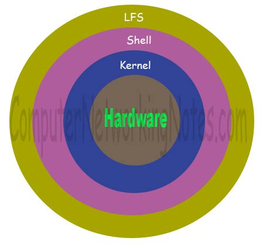
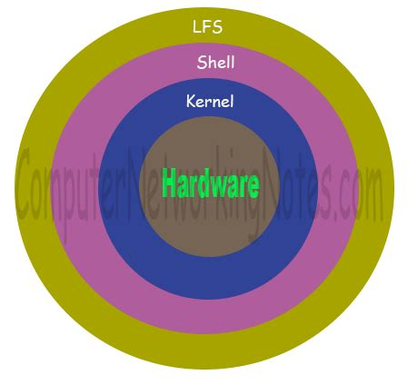
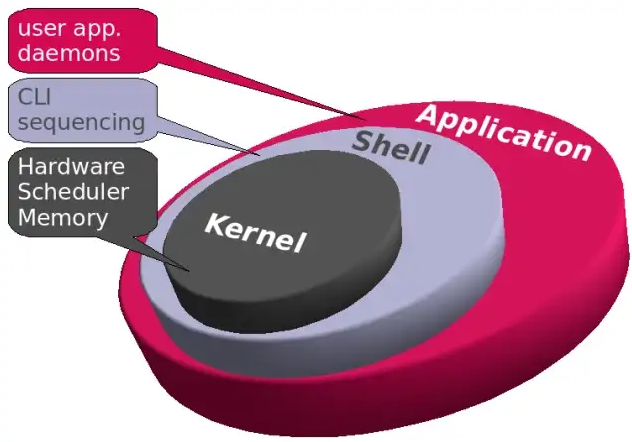
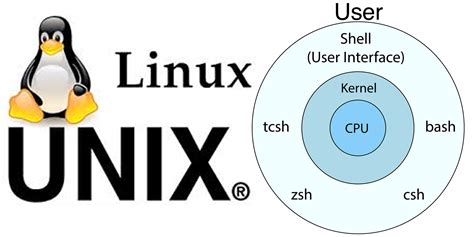
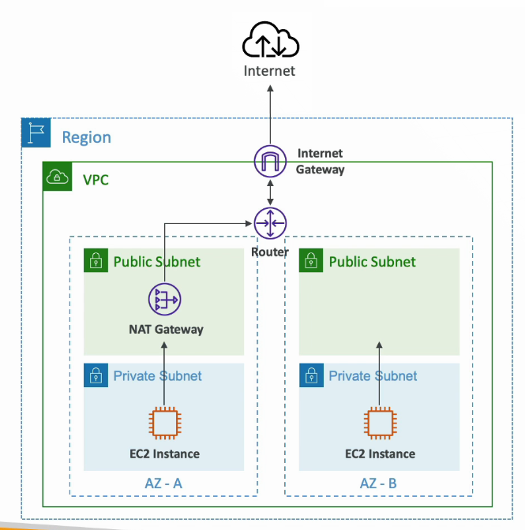
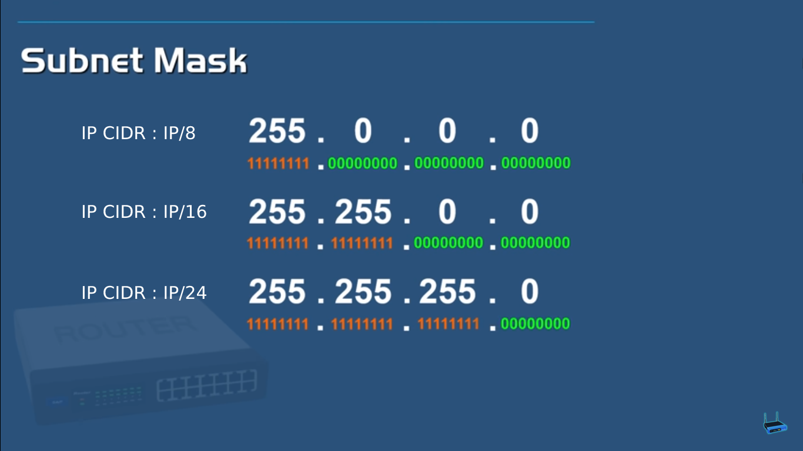
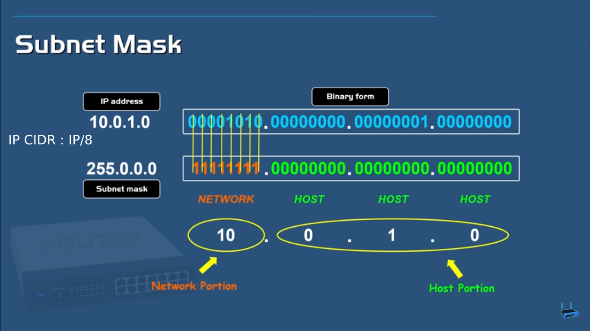
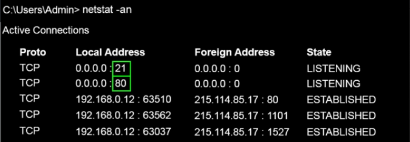
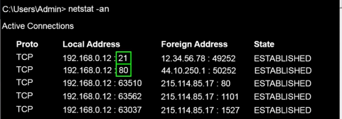

Linux for DevOps
Table of Contents
- Full Course :
- Introduction to Kernel,Shell
- File/Dir navigate (ls, pwd,cd)
- File/Dir Create (mkdir, touch)
- File/Dir Copy (cp Copy ,mv Move(rename) ,rm Remove)
- File/Dir Read and Write (cat,head,tail,less vi,nano,gedit)
- Find
- chmod (File Permissions)
- chown [CHange OWNner of file/dir]
- which
- zip/un-zip [Compress and Uncompress tar, gzip, gunzip, bzip2, bunzip2]
- User Create User,switch, list
- System monitor cmd [df,du,top,free, ps, kill, uptime]
- Networking
- SSH Remote Access (Master-Slave), SSH, RSA, PEM, PPK,, SSL
- SSH (with password and without Password(rsa ,pem key)
- TODO Crontab
- RUN SHELL SCRIPTS
- Regular expression
- Sed (Find and Replace in File )
- AWK and cut searches for text pattern in File
- Sort and Uniq
- Pip" |" combination of two cmds
- redirect
- TODO runlevel
- TO DO link soft , hard
- Advance L2
- TODO Linux Cmd review
- Linux Interview Question
- Extra
- Configure your linux laptop for devops
- Example shell script run remote script
Full Course :
Colt Steele developed this course. :
Youtube : The 50 Most Popular Linux & Terminal Commands - Full Course for Beginner
https://www.youtube.com/watch?v=ZtqBQ68cfJc
Introduction to Kernel,Shell
What is Kernel
- The Linux® kernel is the core component of Operating System (OS) and is the
- It interfacce/communicates between the hardware and process ,
- managing resources as efficiently as possible.
{kind=link}
What the kernel does
The kernel has 4 jobs:
- Process management: Determine which processes can use
- CPU Central Processing Unit
- GPU Graphic Processing Unit and
- & for how long
- Memory management: Keep track of how much memory is used to store
- Device drivers:
- Act as mediator for input and output devices,
- Act as mediator between the hardware(io devices) and processes
- System calls and security:
- From process receive requests for service,
- security: like file permissions, ownership permissions…etc
What is shell
Shell: is the Command Line Interface (cli or terminal interface) between
- application and kernel
- user and kernel
 


Daemons (meaning):
- A program or process that runs in the background but remains inactive until invoked.
- A process (a running program) that does not have a controlling terminal.
Type of shell
https://www.educba.com/types-of-shells-in-linux/
- Bourne Shell : developed at Bell Lab as shell for Unix version 7 in 1979
- Bash Shell : [build based on bourne shell] default shell of many linux distribution
- csh [C Shell] developed by University of California at Berkeley, used in window command promt
- tcsh (Tab C Shell)
- Ksh Korn Shell : Developed by David Korn in year 1980.
- zsh Z Shell (Combined feature of bash + csh + ksh) : Extension fo bourne Shell with improment like Interative login,
- Fish Shell Developed in 2005, Not based on Bourne Shell (User Friendly Shell)

Linux Job
- System Administator
- Network
- Security
- CyberSecurity
- System Programmer
Linux File System
(/): Directory ├── bin # binary like ls,cat........ ├── boot # boot loader and grub boot prg are present ├── cdrom ├── core ├── dev # devices: in linux: Has file system "EVERY THING IS A FILE " | # CONSsist of hardware, partions(sda,sda1,...,nvdia,web-cam) | ├── etc # all configuration files (/etc/passwd) , /etc/ssh/sshd_config | ├── home # (like c: drive os-users) cd ~ or cd <Enter> | | ├── lib # libray which are used to perform varies function ├── lib32 # required by bin and sbin files ├── lib64 | ├── lost+found | ├── media # media (external hard disk ) fixed os manges ├── mnt # mount (usb,mobile,,,,,) removalble | ├── opt # optional folder: user space for exectue or store ├── proc # sudo file : information of sys process and resources ├── root ├── run # temp flies(ram) : Used for process which is boot early ├── sbin # sys binary and standard users are not acess ├── snap # snap packages are stored ├── srv # service directory: If you run servers the file are stored ├── swapfile ├── sys # way to interact with kernel ├── timeshift ├── tmp # temparay folder ├── usr # user app space ├── var # all logs files are └── vmlinuz
important file files
- tmp
- /etc : configuration files
- / usr/bin/java : install directory
- var/logs : all logs
- home
- opt
File/Dir navigate (ls, pwd,cd)
ls List
# ###########################################################
# list directory
# # ##########################################################
ls # parent directory {..} and current dir{.}
ls -a # all hidden files and dir
ls -l # long list format
ls dir/sub_dir_1/sub_dir_2
ls -latr # reverse
# -t sort by modification time, newest first
# -r, --reverse reverse order while sorting
# How do you know the file in list is dir in (ls - l)
# in < ls-l > cmd as d --- --- --- then it is directory
ls -l # i want only files-name in list form
# drwxrwxr-x 2 jayradhey jayradhey 4096 Aug 4 10:11 WorkSpace_AWS
# drwxrwxr-x 14 jayradhey jayradhey 4096 Jul 30 17:02 WorkSpace_Devops
# drwxrwxr-x 2 jayradhey jayradhey 4096 Aug 4 12:39 WorkSpace_Python
ls -lt # sort file in 1st recently(access/modified) used file/dir
#drwxrwxr-x 2 jayradhey jayradhey 4096 Apr 12 22:49 Videos
#-rw-rw-r-- 1 jayradhey jayradhey 2626892 Apr 12 15:55 Kaliyuga_start_date_and_muddling_up_of_J.pdf
#-rw-rw-r-- 1 jayradhey jayradhey 109 Apr 12 14:57 temp_data
#drwxrwxr-x 2 jayradhey jayradhey 4096 Apr 11 19:58 workspace_bash
#drwxr-xr-x 8 jayradhey jayradhey 4096 Apr 11 17:48 Downloads
#drwxr-xr-x 2 jayradhey jayradhey 4096 Apr 11 05:09 Desktop
#drwxrwxr-x 3 jayradhey jayradhey 4096 Apr 10 11:15 aws-repo
#drwxr-xr-x 2 jayradhey jayradhey 12288 Apr 10 10:37 Pictures
#-rw-rw-r-- 1 jayradhey jayradhey 214298 Mar 17 18:39 My_CV_Aug21__Tharun_.pdf
#-rw-rw-r-- 1 jayradhey jayradhey 4906 Feb 23 14:41 SambaSadashivaStotram-Lyrics
#-rw-rw-r-- 1 jayradhey jayradhey 4480 Feb 23 13:31 SambaSadashivaStotram-Lyrics~
#-rw-rw-r-- 1 jayradhey jayradhey 15202288 Feb 22 22:41 'Samba Sadashiva Stotram Lord Shiva Sanskrit Slokas And Mantras DevotionalTV.mp3'
#drwxrwxr-x 3 jayradhey jayradhey 4096 Dec 26 09:04 solar-lunar
#drwxr-xr-x 3 jayradhey jayradhey 4096 Oct 23 21:20 Documents
#drwxrwxr-x 8 jayradhey jayradhey 4096 Oct 23 11:12 mypersonal
#drwxrwxr-x 12 jayradhey jayradhey 4096 Oct 21 14:10 workspace_digivalSolution
#-rw-rw-r-- 1 jayradhey jayradhey 65 Oct 19 12:07 'Unsaved Document 1'
#drwx------ 2 jayradhey jayradhey 4096 Oct 18 12:13 aws-digival-key
#drwx------ 6 jayradhey jayradhey 4096 Oct 17 23:26 templates
#drwxrwxr-x 8 jayradhey jayradhey 4096 Oct 17 22:14 mynotes
#drwxrwxr-x 5 jayradhey jayradhey 4096 Oct 16 13:33 workspace-kubenetics
#drwxrwxr-x 3 jayradhey jayradhey 4096 Oct 13 20:33 udemy
#-rw-rw-r-- 1 jayradhey jayradhey 3208 Oct 11 2021 kube-cmd
#drwxrwxr-x 2 jayradhey jayradhey 4096 Oct 7 2021 git-keys
ls -ltr # sort list in last (access/modified file) to recently modified file
#drwxrwxr-x 2 jayradhey jayradhey 4096 Oct 7 2021 git-keys
#-rw-rw-r-- 1 jayradhey jayradhey 3208 Oct 11 2021 kube-cmd
#drwxrwxr-x 3 jayradhey jayradhey 4096 Oct 13 20:33 udemy
#drwxrwxr-x 5 jayradhey jayradhey 4096 Oct 16 13:33 workspace-kubenetics
#drwxrwxr-x 8 jayradhey jayradhey 4096 Oct 17 22:14 mynotes
#drwx------ 6 jayradhey jayradhey 4096 Oct 17 23:26 templates
#drwx------ 2 jayradhey jayradhey 4096 Oct 18 12:13 aws-digival-key
#-rw-rw-r-- 1 jayradhey jayradhey 65 Oct 19 12:07 'Unsaved Document 1'
#drwxrwxr-x 12 jayradhey jayradhey 4096 Oct 21 14:10 workspace_digivalSolution
#drwxrwxr-x 8 jayradhey jayradhey 4096 Oct 23 11:12 mypersonal
#drwxr-xr-x 3 jayradhey jayradhey 4096 Oct 23 21:20 Documents
#drwxrwxr-x 3 jayradhey jayradhey 4096 Dec 26 09:04 solar-lunar
#-rw-rw-r-- 1 jayradhey jayradhey 15202288 Feb 22 22:41 'Samba Sadashiva Stotram Lord Shiva Sanskrit Slokas And Mantras DevotionalTV.mp3'
#-rw-rw-r-- 1 jayradhey jayradhey 4480 Feb 23 13:31 SambaSadashivaStotram-Lyrics~
#-rw-rw-r-- 1 jayradhey jayradhey 4906 Feb 23 14:41 SambaSadashivaStotram-Lyrics
#-rw-rw-r-- 1 jayradhey jayradhey 214298 Mar 17 18:39 My_CV_Aug21__Tharun_.pdf
#drwxr-xr-x 2 jayradhey jayradhey 12288 Apr 10 10:37 Pictures
#drwxrwxr-x 3 jayradhey jayradhey 4096 Apr 10 11:15 aws-repo
#drwxr-xr-x 2 jayradhey jayradhey 4096 Apr 11 05:09 Desktop
#drwxr-xr-x 8 jayradhey jayradhey 4096 Apr 11 17:48 Downloads
#drwxrwxr-x 2 jayradhey jayradhey 4096 Apr 11 19:58 workspace_bash
#-rw-rw-r-- 1 jayradhey jayradhey 109 Apr 12 14:57 temp_data
#-rw-rw-r-- 1 jayradhey jayradhey 2626892 Apr 12 15:55 Kaliyuga_start_date_and_muddling_up_of_J.pdf
#drwxrwxr-x 2 jayradhey jayradhey 4096 Apr 12 22:49 Videos
# histor
ls -latr | grep test.sh | rm -rf
# histor
ls -latr | grep test.sh | rm -rf
pwd Print Working Directory
# ########################################################## # print working directory # ########################################################## pwd # [root@ip-172-31-19-8 python]# pwd ## /etc/python
cd
# ##########################################################
# Change directory
# ##########################################################
cd .. # parent directory {..} and current dir{.}
cd # home directory
cd ~ # home directory
cd / # root direcoty
cd /opt #
cd ~/.bashrc # in home dir .bashrc file
# direct path or home path
cd ~/Workspace/
cd /home/jayaradhe/Workspace/
# relative path
cd ~/MyNotes_dev
cd ../WorkSpace_AWS # THIS is relative path with respect to current path
File/Dir Create (mkdir, touch)
mkdir Make Dir
mkdir mydir_name
create file
touch file_name
File/Dir Copy (cp Copy ,mv Move(rename) ,rm Remove)
## ########################################################## # File/Directory Creation, Delete,copy,move,rename manupulation cmd ## ########################################################## touch test_file.txt # create a file mkdir test_files # create a directory cp test_file.txt copy_file.txt # copy(or) duplicate a file # What about copy and replace mv test_file.tzt rename_file.txt # rename a file mv orig_file.txt SubDir1/ # move to SubDir1 mv orig_file.txt SubDir1/rename_file.txt # move and remane rm orig_file.txt # Delete a file rm -R SubDir1 # Delete folder(dir) and inside files RECURSIVELY rm -rf subdir1 ## ########################################################## # Directory ## ########################################################## mkdir SubDir1 # Create a Dir rm -R SubDir1 # Delete folder(dir) and inside files RECURSIVELY mv /path Orginal_Dir1 /path moved_ParentDir/ # move directies # mv /home/dan/MyNotes_personal_2 /home/dan/Pictures/ cp -r /path/subdir1 /path/copied_subdir1 # copy directory recursively rm -rf subdir1
File/Dir Read and Write (cat,head,tail,less vi,nano,gedit)
## ########################################################## # Read and Write file in terminal ## ########################################################## cat orig_file.txt # print content of file in terminal head /etc/passwd # by default it show/print 10 lines head -n1 /etc/passwd tail -n1 /etc/passwd less /etc/passwd vi orig_file.txt # edit file nano orig_file.txt gedit orig_file.txt
Find
## ########################################################## # Find files/directory # # ########################################################## find <path> -type f -name <file-name> # For find file find <path> -type d -name <dir-name> # For find dir # Examples for find all files in dir (include child dir) find . # give all list of file in current dir and in all child dir find / # give all files in all level of tree # Examples for find all dir in dir (include child dir) find . -type d find / -type d # Example find all files which are modified last 10 minints ago in currernt dirctory ? # touch new_modified.txt find . -type f -mmin -10 # Example find all files which are modified morethan 10 minints ago in currernt dirctory ? find . -type -f -mmin +10 #Find all files which are modified more than 1 minite ago and less than 5 minite ago find . -type f -mmin +1 -mmin -5 #Find files modified less than 20 days ago find . -type f -mtime -20 #Find files modified more than 20 days ago find . -type f -mtime +20 # Find file more than 5Mb find . -type -size +5M # G for Gb # Find files which are empty ? find . -empty # Search files based on permissions ? find . -perm 777 # files which has 777 permision # Find maxdepth find . -maxdepth 2
[Assignment]
- Search for file or dir which has name
Website_Demo- Change
file/dirownership of owner and group tocoreymschafer and www-datarespectively - Change dir and file inside dir permision to 755 or 644
- Change
- Delete all file in current dir and delete them
# delete all files with .org~ form current direcory and child dir
find . -type f -name "*.org~" # list all jpg in current directory and child
## Action on search files
# Change user and group and permission to (775 for dir and 664 for files
#Step 1: change user and group
find Website_Demo -exec chom coreyschafer:www-data {} +
ls -la Website_Demo
# Step 2 : change directory permission to 755
find Website_DEMO -type d -exec chomd 775 {} +
# Step 2 : change file permission to 664
find Website_Demo -type f -exec chomod 664 {} +
# delete all files with .jpg form current direcory
find . -type f -name "*.jpg" # list all jpg in current directory and child directory
# NOTE : In order to get only in current dir but not child dirctory
find . -type f -name "*.jpg" -maxdepth 1
# To delete above files
find. -type f -name "*.jpg" -maxdepth 1 -exec rm {} +
find . -perm
find
#NOTE :
# mmint , mtime # modified minites and modified time
# amint , atime # access minites and acess time
# cmint, ctime # changed minites and changed time
touch phani kar sanjay sathish
find /devops -type f -name kar # search "kar" file
find /devops -type f -name "*.txt"
mkdir india pakistan austriala asia china japan
find /devops -type d -name asia # search asia
find . -type -d asia # '.' search in current dir(.)
chmod (File Permissions)
## ##########################################################
# File permissions:
## ##########################################################
# Change mode (permissions)
drwx-rwx-rwx
owner-group-user
d: driectory
x(1) : executable user
w(2) : write
r(4) : read
0: ---
1: --x
2: -w-
3: -wx
4: r--
5: r-x
6: rw-
7: rwx
## ##########################################################
chmod 777 sat # drwx rwx rwx file
chmod -R 777 phani # dir and inside files
chmod +x <file_name>
chmod 755 sat # drwx r-x r-x
chmod 400 aws_key.pem # -r-- --- ---
## ##########################################################
-rwx rwx rwx 1 root root 1156 Mar 24 08:36 hosts
-rw -r-- r-- 1 root root 0 Mar 24 14:17 ansible.txt
# owner-group-user owner group
# Who are owner group and users in change mode ?
# WHAT IS difference btw owner,group,user ?
# Who is owner,group,user 's ?
chown [CHange OWNner of file/dir]
## ########################################################## # change owner of file or dir : chown ## ########################################################## chown owner-user file chown <owner-user>:<owner-group> <file/directory> ################################################################ [root@ansible-master ansible]# chown -R ansible:ansible ansible.txt -rwxrwxrwx 1 root root 1156 Mar 24 08:36 hosts -rw-r--r-- 1 ansible ansible 0 Mar 24 14:17 ansible.tx # ls -l demo.txt #>> -rw-r--r-- 1 root root 0 Aug 31 05:48 demo.txt # chown vivek demo.txt # ls -l demo.txt # >> -rw-r--r-- 1 vivek root 0 Aug 31 05:48 demo.txt # chown vivek:vivek demo.txt # ls -l demo.txt #>> -rw-r--r-- 1 vivek vivek 0 Aug 31 05:48 demo.txt chown ec2-user:ec2-user <file/dir> # Eg: cd ~ mkdir devops ls -latr chown -R ec2-user:ec2-user devops ls -latr
which
# to get the location where the app is installed which git # /usr/bin/git which java # /usr/bin/java which emacs # /snap/bin/emacs which firefox # /usr/bin/firefox which filezilla # /usr/bin/filezilla which docker # /usr/bin/docker which python # ~/anaconda3/bin/python
zip/un-zip [Compress and Uncompress tar, gzip, gunzip, bzip2, bunzip2]
## ########################################################## ## zip and un-zip ## ########################################################## tar -cvzf india.tar india # c : craete v: verboz, z: zip f:file tar -xvzf india.tar # x: extrach sudo apt install unzip zip # create zip zip <option> <zip_filename.zip> <list of file> zip sampleZipFile.zip ExampleFile.txt # Create zip file For backup and delete the Original File zip -d sampleZipFile.zip ExampleFile.txt # Unzip a file unzip sampleZipfile.zip # More Command : https://www.hostinger.com/tutorials/how-to-unzip-files-linux/
User Create User,switch, list
Super User su
############################################################# # Root User # ########################################################## sudo su - # root user # what is password for sudo su - ? # How to know root user and normal user # root user [root@ip-172-31-30-43 ~]# # normal user [ec2-user@ip-172-31-30-43 ~]$ # root user start with #(ash symbal) # normal user start with $(doller symbol) sudo -i # (alternative of root user) whoami jayradhey@jayradhey:~$ whoami # username : jayradhey # hostname : jayradhey
List user in linux
cat /etc/passwd # to see password
awk -F ':' '{print $1}' /etc/passwd # see list of user only
awk -F ':' '{print "UID: " $3 "LOGIN:" $1}' /etc/passwd # see user with uid
#For more info UID : https://linuxhandbook.com/uid-linux/
Create Users
## ########################################################## # Create Users ## ########################################################## useradd <new-user-name> # create users passwd <new-user-name> # set password passwd <user-name> # change password #eg : useradd phani passwd phani # Enter password # Create user with home direcotry sudo useradd <new-user-name> -m -d <new-user-name-home-dir-path> sudo useradd phani -m -d /home/phani # here : # -m , --create-home # Create the user's home directory if it does not exist. # The files and directories contained in the skeleton directory # (which can be defined with the -k option) will be copied to the home directory. # By default, if this option is not specified and CREATE_HOME is not enabled, no home directories are created. # -d , --home-dir # Create the user's home directory if it does not exist. The files and # directories contained in the skeleton directory (which can be defined # with the -k option) will be copied to the home directory. # By default, if this option is not specified and CREATE_HOME # is not enabled, no home directories are created.
SU Switch User in linux
su jenkins # jenkins@host-name:/root$ # pwd : /root su - jenkins # jenkins@host-name:~$ # pwd : /var/lib/jenkins
delete a user
userdel <user_name>
System monitor cmd [df,du,top,free, ps, kill, uptime]
top
## ########################################################## # system moitor ## ########################################################## top # user id, user, cup, mem, swap, process name , process id # Ctrl-C
df
# ## ##########################################################
# diskspace or disk free (used available, % used)
# ## ##########################################################
df -h # O
df - h #
#Filesystem Size Used Avail Use% Mounted on
#udev 3.8G 0 3.8G 0% /dev
#tmpfs 776M 1.6M 775M 1% /run
#/dev/sda1 916G 550G 320G 64% /
#tmpfs 3.8G 212M 3.6G 6% /dev/shm
#tmpfs 5.0M 4.0K 5.0M 1% /run/lock
#tmpfs 3.8G 0 3.8G 0% /sys/fs/cgroup
#/dev/loop0 185M 185M 0 100% /snap/eclipse/40
#/dev/loop1 63M 63M 0 100% /snap/gtk-common-t
df -aPh # -a :all, P: Portable, h: human read able
# Ex : check if disk space of /dev/xvda1 is more the 3GB then clean the space
thershold=3
disc= `df-h |grep /dev/xvda1 | awk '{print 4}'| cut -c 1`
echo "$disc"
du
## ########################################################## # directory size: du -sh <dir_name> # disk usage : ## ########################################################## du -sh asia # -s : summarize , # -h : human readable du -sh sat du -sh * # size in current directory du -sh *.jpg # size of all jpg formate # du -h Gitabase # 378M Gitabase
RAM free
## ########################################################## # RAm size ## ########################################################## free -m free -mh # free or available ram in Gb or Mb
ps - example Intro
## ########################################################## # process running ## ########################################################## man ps # -a Select all processes except both session leaders (see getsid(2)) and processes not associated with a terminal. # -e Select all processes. Identical to -A. # -p --pid pidlist Select by PID. This selects the processes whose process ID numbers appear in pidlist. Identical to p and --pid. # -u userlist Select by effective user ID (EUID) or name. This selects the processes whose effective user name or ID is in userlist. "ps -aux" print all processes owned by a user named "x" and all processes that would be selected by the -a option. ps # PID TTY TIME CMD # 79195 pts/0 00:00:15 jupyter-noteboo # 129995 pts/1 00:00:00 ps ps -x # PID TTY STAT TIME COMMAND # PID TTY STAT TIME COMMAND # 1781 ? Ss 0:00 /lib/systemd/systemd --user # 1789 ? S 0:00 (sd-pam) # 1798 ? S<sl 84:45 /usr/bin/pulseaudio --daemonize=no #--log-target=journa # 1801 ? SLl 0:00 /usr/bin/gnome-keyring-daemon --daemonize --login # 1804 ? Ssl 0:02 cinnamon-session --session cinnamon ps -u # USER PID %CPU %MEM VSZ RSS TTY STAT START TIME COMMAND # jayradh+ 79171 0.0 0.0 10864 4952 pts/0 Ss Dec23 0:00 bash # jayradh+ 79195 0.0 1.2 530832 102140 pts/0 Sl+ Dec23 0:15 ~/ # jayradh+ 129438 0.0 0.0 11008 5100 pts/2 Ss+ 11:00 0:00 -bash # jayradh+ 129520 0.0 0.0 10864 5100 pts/1 Ss 11:04 0:00 bash # jayradh+ 130050 0.0 0.0 11488 3252 pts/1 R+ 11:21 0:00 ps -aux # USER PID %CPU %MEM VSZ RSS TTY STAT START TIME COMMAND # jayradh+ 79171 0.0 0.0 10864 4952 pts/0 Ss Dec23 0:00 bash # jayradh+ 79195 0.0 1.2 530832 102140 pts/0 Sl+ Dec23 0:15 ~/ # jayradh+ 129438 0.0 0.0 11008 5100 pts/2 Ss+ 11:00 0:00 -bash # jayradh+ 129520 0.0 0.0 10864 5100 pts/1 Ss 11:04 0:00 bash # jayradh+ 130050 0.0 0.0 11488 3252 pts/1 R+ 11:21 0:00 ps -ef #UID PID PPID C STIME TTY TIME CMD ps # PID TTY TIME CMD # 20512 pts/0 00:00:00 bash # 21186 pts/0 00:00:00 ps ps -e # -e : everything # PID TTY TIME CMD # 1 ? 00:00:08 systemd # 2 ? 00:00:00 kthreadd # 3 ? 00:00:00 rcu_gp # 4 ? 00:00:00 rcu_par_gp # 6 ? 00:00:04 kworker/0:0H-events_highpri # 9 ? 00:00:00 mm_percpu_wq # 10 ? 00:00:01 ksoftirqd/0 # 11 ? 00:00:50 rcu_sched # 12 ? 00:00:00 migration/0 # 13 ? 00:00:00 idle_inject/0 # 14 ? 00:00:00 cpuhp/0 # 15 ? 00:00:00 cpuhp/1 # 16 ? 00:00:00 idle_inject/1 ps -ef # -f: full #UID PID PPID C STIME TTY TIME CMD #root 1 0 0 02:43 ? 00:00:08 /sbin/init splash #root 2 0 0 02:43 ? 00:00:00 [kthreadd] #root 3 2 0 02:43 ? 00:00:00 [rcu_gp] #root 4 2 0 02:43 ? 00:00:00 [rcu_par_gp] #root 6 2 0 02:43 ? 00:00:04 [kworker/0:0H-events_highpri] #root 9 2 0 02:43 ? 00:00:00 [mm_percpu_wq] #root 10 2 0 02:43 ? 00:00:01 [ksoftirqd/0] #root 11 2 0 02:43 ? 00:00:50 [rcu_sched] #root 12 2 0 02:43 ? 00:00:00 [migration/0] #root 13 2 0 02:43 ? 00:00:00 [idle_inject/0] #root 14 2 0 02:43 ? 00:00:00 [cpuhp/0] #root 15 2 0 02:43 ? 00:00:00 [cpuhp/1] #root 16 2 0 02:43 ? 00:00:00 [idle_inject/1] #root 17 2 0 02:43 ? 00:00:00 [migration/1] #root 18 2 0 02:43 ? 00:00:02 [ksoftirqd/1] #root 20 2 0 02:43 ? 00:00:00 [kworker/1:0H-events_highpri] #root 21 2 0 02:43 ? 00:00:00 [cpuhp/2] #root 22 2 0 02:43 ? 00:00:00 [idle_inject/2] #root 23 2 0 02:43 ? 00:00:00 [migration/2] #root 24 2 0 02:43 ? 00:00:01 [ksoftirqd/2] #root 26 2 0 02:43 ? 00:00:00 [kworker/2:0H-events_highpri] #root 27 2 0 02:43 ? 00:00:00 [cpuhp/3] ps -ef | grep <process-name> ps -ef| grep tomcat # UID PID PPID C STIME TTY TIME CMD # jayradhe 23909 7504 0 13:38 pts/0 00:00:00 grep --color=auto tomcat # UID: USER iD # PID : Process Id # PPID: Parent Process Id ps -aux ps -aux #USER PID %CPU %MEM VSZ RSS TTY STAT START TIME COMMAND #root 1 0.0 0.1 177072 12772 ? Ss 02:43 0:08 /sbin/init splash #root 2 0.0 0.0 0 0 ? S 02:43 0:00 [kthreadd] #root 3 0.0 0.0 0 0 ? I< 02:43 0:00 [rcu_gp] #root 4 0.0 0.0 0 0 ? I< 02:43 0:00 [rcu_par_gp] #root 6 0.0 0.0 0 0 ? I< 02:43 0:04 [kworker/0:0H-events_highpri] #root 9 0.0 0.0 0 0 ? I< 02:43 0:00 [mm_percpu_wq] #root 10 0.0 0.0 0 0 ? S 02:43 0:01 [ksoftirqd/0] #root 11 0.0 0.0 0 0 ? I 02:43 0:50 [rcu_sched] #root 12 0.0 0.0 0 0 ? S 02:43 0:00 [migration/0] #root 13 0.0 0.0 0 0 ? S 02:43 0:00 [idle_inject/0] #root 14 0.0 0.0 0 0 ? S 02:43 0:00 [cpuhp/0] #root 15 0.0 0.0 0 0 ? S 02:43 0:00 [cpuhp/1] #root 16 0.0 0.0 0 0 ? S 02:43 0:00 [idle_inject/1] #root 17 0.0 0.0 0 0 ? S 02:43 0:00 [migration/1] #root 18 0.0 0.0 0 0 ? S 02:43 0:02 [ksoftirqd/1] #root 20 0.0 0.0 0 0 ? I< 02:43 0:00 [kworker/1:0H-events_highpri] #root 21 0.0 0.0 0 0 ? S 02:43 0:00 [cpuhp/2] #root 22 0.0 0.0 0 0 ? S 02:43 0:00 [idle_inject/2] #root 23 0.0 0.0 0 0 ? S 02:43 0:00 [migration/2] #root 24 0.0 0.0 0 0 ? S 02:43 0:01 [ksoftirqd/2] #To see every process running as root (real & effective ID) in user format: ps -U root -u root u # more info man ps ps -f -u karthik ps -f -u root ps -f -p 20906 # show process info PID=20906
ps
EXAMPLES
To see every process on the system using standard syntax:
ps -e ps -ef ps -eF ps -ely
To see every process on the system using BSD syntax:
ps ax ps axu
To print a process tree:
ps -ejH ps axjf
To get info about threads:
ps -eLf ps axms
To get security info:
ps -eo euser,ruser,suser,fuser,f,comm,label ps axZ ps -eM
To see every process running as root (real & effective ID) in user format:
ps -U root -u root u
To see every process with a user-defined format:
ps -eo pid,tid,class,rtprio,ni,pri,psr,pcpu,stat,wchan:14,comm ps axo stat,euid,ruid,tty,tpgid,sess,pgrp,ppid,pid,pcpu,comm ps -Ao pid,tt,user,fname,tmout,f,wchan
Print only the process IDs of syslogd:
ps -C syslogd -o pid=
SIMPLE PROCESS SELECTION
a Lift the BSD-style "only yourself" restriction, which is imposed upon the set of all processes when some BSD-style (without "-") options are used or
when the ps personality setting is BSD-like. The set of processes selected in this manner is in addition to the set of processes selected by other
means. An alternate description is that this option causes ps to list all processes with a terminal (tty), or to list all processes when used
together with the x option.
-A Select all processes. Identical to -e.
-a Select all processes except both session leaders (see getsid(2)) and processes not associated with a terminal.
-d Select all processes except session leaders.
--deselect
Select all processes except those that fulfill the specified conditions (negates the selection). Identical to -N.
-e Select all processes. Identical to -A.
g Really all, even session leaders. This flag is obsolete and may be discontinued in a future release. It is normally implied by the a flag, and is
only useful when operating in the sunos4 personality.
-N Select all processes except those that fulfill the specified conditions (negates the selection). Identical to --deselect.
T Select all processes associated with this terminal. Identical to the t option without any argument.
r Restrict the selection to only running processes.
x Lift the BSD-style "must have a tty" restriction, which is imposed upon the set of all processes when some BSD-style (without "-") options are used or
Manual page ps(1) line 69/891 12% (press h for help or q to quit)
SIMPLE PROCESS SELECTION
a Lift the BSD-style "only yourself" restriction, which is imposed upon the set of all processes when some BSD-style (without "-") options are used or
when the ps personality setting is BSD-like. The set of processes selected in this manner is in addition to the set of processes selected by other
means. An alternate description is that this option causes ps to list all processes with a terminal (tty), or to list all processes when used
together with the x option.
-A Select all processes. Identical to -e.
-a Select all processes except both session leaders (see getsid(2)) and processes not associated with a terminal.
-d Select all processes except session leaders.
--deselect
Select all processes except those that fulfill the specified conditions (negates the selection). Identical to -N.
-e Select all processes. Identical to -A.
g Really all, even session leaders. This flag is obsolete and may be discontinued in a future release. It is normally implied by the a flag, and is
only useful when operating in the sunos4 personality.
-N Select all processes except those that fulfill the specified conditions (negates the selection). Identical to --deselect.
T Select all processes associated with this terminal. Identical to the t option without any argument.
r Restrict the selection to only running processes.
x Lift the BSD-style "must have a tty" restriction, which is imposed upon the set of all processes when some BSD-style (without "-") options are used or
Manual page ps(1) line 69/891 12% (press h for help or q to quit)
kill
# $ kill -kill <PID> # to kill process # $ kill -term <PID> # to kill process # $ kill -l # 1) SIGHUP 2) SIGINT 3) SIGQUIT 4) SIGILL 5) SIGTRAP # 6) SIGABRT 7) SIGBUS 8) SIGFPE 9) SIGKILL 10) SIGUSR1 kill -9 23909 kill -9
uptime
uptime # find out how long system is active. #Display the time since the last boot 07:24:52 up 3 days, 1:33, 1 user, load average: 0.67, 0.76, 0.74
Networking
Basics of Computer Networking
What is Ip4 and Ip6 : https://www.youtube.com/watch?v=ThdO9beHhpA
What is Port : https://www.youtube.com/watch?v=g2fT-g9PX9o
What is Subnet : https://www.youtube.com/watch?v=6_giEv20En0
https://www.youtube.com/watch?v=NyZWSvSj8ek
What is Subnet Masking : https://www.youtube.com/watch?v=s_Ntt6eTn94
IP Address
An Internet Protocol address, also known as an IP address,
- is a set of numbers given to a computer or device to let it communicate on the internet.
- without an IP address, you wouldn’t be able to send and receive information OR
- without IP addresses, the internet would be impossible.
And there are two types of IP addresses: IPv4 and IPv6.
IPv4
IPv4 uses a 32-bit address and can support a maximum of \(2^{32}=2^{8*4}={2^8}^{4}=(8 \;binary\; digits)^4 =256^4\) (or 4.3 billion) IP addresses.
An IPv4 address is made up of four numbers, each ranging from 0 to 255.
- These are separated by full stops
. - X.X.X.X where x range from 0 to 255
Like: IPv4 address: 192.168.1.1 , 255.255.255.255
IPv4 has a limit of 4.2 billion
Back in the early 80s, this was seen as far more than enough.
But of course, as the internet grew across the world, we quickly began to run out of IPv4 addresses.
So new version version 6 of IP address is released
Currently we are in middle of transmission from ipv4 to ipv6 so we can see our OS has both ipv4 and ipV6
IPV6
Ipv6 USES 128 bit address ,support max of \(2^{128}=2^{16*8}=({2^{16}})^{8}=(16 \;binary \;digits)^8= (16/4=4Hexadecimal \;Digits)^8 = 3.4 * 10^{38}\) 340 undecillion IP addresses,
An IPv6 address is made up of eight parts, each ranging from 0000 to FFFF.
- These are separated by full stops
: - example :
2001:0000:3238:DFE1:0063:0000:0000:FEFB
binary digit(2) : 0 to 1 : \(\;\;\;\;\;\;\) 0 to 1 : 1 binary digits
octave digts(8) : 0 to 7 : \(\;\;\) 000 to 111 : 3 binary digits
hex digits(16) : 0 to 9,A B,C,D,E,F : 0000 to 1111 : 4 binary digits

IP4 vs IP6
https://cybernews.com/what-is-vpn/ipv4-vs-ipv6/
https://www.geeksforgeeks.org/differences-between-ipv4-and-ipv6/
IP6 advangates :
- Real Time Data Transmission
- Authentication
- Encryption Enable Encryption Header Fixed)
- Fast Processing at Router
- No Broadcast to Multicast
- No Fragmentation
- Can Co-existing with IPv4 during transition
- Dual Stack : between ipv4 to ipv6
- Tunneling : communicate between twoIf both source and destination are IPV6 but inbetween data is converted into ipv6 to ipv4 and then ipv6.
- Header Translation :
- When majority for internet user are using ipv6 and very few are using ipv4 then we use header translation
- Easy Resource allocation
- Auto-configuration
- means that configuration tasks, such as IP address assignment and device numbering can take place automatically.
- Security
- provide data integrity, authentication and confidentiality are baked into IPv6.
- However, IPSec can also be implemented on IPv4, which means that, in theory at least, IPv4 has the potential to be just as safe as IPv6. But of course, as it can be expensive to implement, this hasn’t seen widespread uptake.
IPV6 Tunneling
Some internet service providers use transition technologies, such as IPv6 tunnels. This technology allows private networks to communicate with each other, even if one of them uses an IPv4 address, and the other one – IPv6.
However, IPv6 tunneling can leave users vulnerable to cyber security threats like DoS attacks. In addition, hackers target IPv6 tunnel users with reflection attacks and packet injection.
Of course, as this transition to IPv6 is likely to take many more years to complete, these transition methods will probably be in use for a while. So it’s worth bearing in mind that the transition technology could leave you vulnerable to hacking.
Which one is faster IPv4 or IPv6
In speed tests, IPv4 and IPv6 delivered the same speed in direct connections. As a matter of fact, if anything, IPv4 was occasionally slightly quicker.
In theory, IPv6 should be slightly faster as cycles don’t have to be wasted on NAT translations. However, IPv6 also has larger packets, which can make it a little slower in some cases. So if anything, IPv4 may perform slightly faster. But there’s really not that much difference in it.
ifconfig
youtube : https://www.youtube.com/watch?v=waCYu4QGsYc
ifconfig #br-2c984f206f05: flags=4099<UP,BROADCAST,MULTICAST> mtu 1500 # inet 172.18.0.1 netmask 255.255.0.0 broadcast 172.18.255.255 # ether 02:42:42:1a:02:96 txqueuelen 0 (Ethernet) # RX packets 0 bytes 0 (0.0 B) # RX errors 0 dropped 0 overruns 0 frame 0 # TX packets 0 bytes 0 (0.0 B) # TX errors 0 dropped 0 overruns 0 carrier 0 collisions 0 ifconfig | grep inet # inet 172.18.0.1 netmask 255.255.0.0 broadcast 172.18.255.255 # inet 172.19.0.1 netmask 255.255.0.0 broadcast 172.19.255.255 # inet 172.22.0.1 netmask 255.255.0.0 broadcast 172.22.255.255 # inet 172.20.0.1 netmask 255.255.0.0 broadcast 172.20.255.255 # inet 172.21.0.1 netmask 255.255.0.0 broadcast 172.21.255.255 # inet 172.17.0.1 netmask 255.255.0.0 broadcast 172.17.255.255 # inet 127.0.0.1 netmask 255.0.0.0 # inet6 ::1 prefixlen 128 scopeid 0x10<host> # inet 192.168.0.108 netmask 255.255.255.0 broadcast 192.168.0.255 # inet6 fe80::f5a8:3e4b:e250:4588 prefixlen 64 scopeid 0x20<link> # inet6 2406:b400:d4:2fc1:c5d:deba:9ba5:e7bc prefixlen 64 scopeid 0x0<global> # inet6 2406:b400:d4:2fc1:72e0:4b41:83e1:6d9c prefixlen 64 scopeid 0x0<global> ip a #1: lo: <LOOPBACK,UP,LOWER_UP> mtu 65536 qdisc noqueue state UNKNOWN group default qlen 1000 # link/loopback 00:00:00:00:00:00 brd 00:00:00:00:00:00 # inet 127.0.0.1/8 scope host lo # valid_lft forever preferred_lft forever # inet6 ::1/128 scope host # valid_lft forever preferred_lft forever #2: enp2s0: <NO-CARRIER,BROADCAST,MULTICAST,UP> mtu 1500 qdisc fq_codel state DOWN group default qlen 1000 # link/ether 10:7d:1a:3b:61:f9 brd ff:ff:ff:ff:ff:ff #3: wlp1s0: <BROADCAST,MULTICAST,UP,LOWER_UP> mtu 1500 qdisc noqueue state UP group default qlen 1000 # link/ether ac:ed:5c:ef:5e:0c brd ff:ff:ff:ff:ff:ff # inet 192.168.0.108/24 brd 192.168.0.255 scope global dynamic noprefixroute wlp1s0 # valid_lft 72669sec preferred_lft 72669sec # inet6 2406:b400:d4:b0fd:9098:5f6b:fc38:2f62/64 scope global temporary dynamic # valid_lft 298sec preferred_lft 118sec # inet6 2406:b400:d4:b0fd:abb0:fdb9:861a:e897/64 scope global dynamic mngtmpaddr noprefixroute # valid_lft 298sec preferred_lft 118sec # inet6 fe80::f5a8:3e4b:e250:4588/64 scope link noprefixroute # valid_lft forever preferred_lft forever #4: docker0: <NO-CARRIER,BROADCAST,MULTICAST,UP> mtu 1500 qdisc noqueue state DOWN group default # link/ether 02:42:5e:07:c1:f7 brd ff:ff:ff:ff:ff:ff # inet 172.17.0.1/16 brd 172.17.255.255 scope global docker0 # valid_lft forever preferred_lft forever # inet6 fe80::42:5eff:fe07:c1f7/64 scope link # valid_lft forever preferred_lft forever #7: vboxnet0: <BROADCAST,MULTICAST> mtu 1500 qdisc noop state DOWN group default qlen 1000 # link/ether 0a:00:27:00:00:00 brd ff:ff:ff:ff:ff:ff #8: vboxnet1: <BROADCAST,MULTICAST> mtu 1500 qdisc noop state DOWN gr ip -br a # br : brief #lo UNKNOWN 127.0.0.1/8 ::1/128 #enp2s0 DOWN #wlp1s0 UP 192.168.0.108/24 2406:b400:d4:2fc1:c5d:deba:9ba5:e7bc/64 2406:b400:d4:2fc1:72e0:4b41:83e1:6d9c/64 #fe80::f5a8:3e4b:e250:4588/64 #docker0 DOWN 172.17.0.1/16 #br-2c984f206f05 DOWN 172.18.0.1/16 #br-3a5e8f4ff416 DOWN 172.19.0.1/16 #br-4f71a42cc476 DOWN 172.22.0.1/16 #br-d0f7406fcca0 DOWN 172.20.0.1/16 #br-e0995df7fb8b DOWN 172.21.0.1/16
Subnet Masking

Subnet or Subnetwork
- is a network inside a network.
- Subnets make networks more efficient.
- Through subnetting, network traffic can travel a shorter distance without passing through unnecessary routers to reach its destination.
Subnet Mask
- A subnet mask is like an IP address,
- But for only internal usage within a network.
- Routers use subnet masks to route data packets to the right place.
- Subnet masks are not indicated within data packets traversing the Internet
- those packets only indicate the destination IP address, which a router will match with a subnet.
Every IP address has two parts. The first part indicates which network the address belongs to. The second part specifies the device within that network. However, the length of the "first part" changes depending on the network's class.  
Private Netwrok
- Networks are categorized into different classes, labeled A through E.
- Class A networks can connect 16 millions of devices.
- Class B networks can connect 1 million of devices and
- Class C networks are connect 65 thousand devices progressively smaller in size.
- (Class D and Class E networks are not commonly used.)
Private Network :
The Internet Assigned Numbers Authority (IANA) has assigned several address ranges to be used by private networks.
Address ranges to be use by private networks are:
Class A: 10.0.0.0/8 \(\;\;\;\;\;\;\;\) ip range= \(2^{32-8}-2=\) 16,777,215 \(\;\;\;\) Ip address : \(\;\;\) 10.0.0.0 - 10.255.255.255
Class B: 172.16.0.0/12 \(\;\;\) ip range= \(2^{32-12}-2=\) 1,048,574 \(\;\;\;\) Ip address :172.16.0.0 - 172.31.255.255
Class C: 192.168.0.0/16 \(\;\;\) ip range= \(2^{32-16}-2=\) 65,534 \(\;\;\;\) Ip address :192.168.0.0 - 192.168.255.255
Calculate Network Masking : https://jodies.de/ipcalc?host=192.168.1.1&mask1=17&mask2=
ping
# GET ip ping google.com #PING google.com (172.217.163.46) 56(84) bytes of data. # 64 bytes from maa05s01-in-f14.1e100.net (172.217.163.46): icmp_seq=1 ttl=55 time=16.5 ms # 64 bytes from maa05s01-in-f14.1e100.net (172.217.163.46): icmp_seq=2 ttl=55 time=17.1 ms # 64 bytes from maa05s01-in-f14.1e100.net (172.217.163.46): icmp_seq=3 ttl=55 time=20.2 ms # 64 bytes from maa05s01-in-f14.1e100.net (172.217.163.46): icmp_seq=4 ttl=55 time=88.2 ms # --- google.com ping statistics --- # 8 packets transmitted, 8 received, 0% packet loss, time 7011ms # rtt min/avg/max/mdev = 58.377/79.799/146.107/30.594 ms
source : https://www.youtube.com/watch?v=IIicPE38O-s
- Ping stands for P acket I nter N et G roper.
- Ping is used to test and diagnose Network connectivity-related issues.
It is based on the ICMP protocol Internet Control Message Protocol (ICMP)
PING command operates by sending ICMP Echo Request message to destination computer and waiting for responsed,
The reply message are know as Echo Reply Request
- Based on destination computer response ping provide two type of information
- Packet Loss
\[Packet Loss = \frac{Packet \;Trasmitted-Packet \;Received}{Packet \;Trasmitted} * 100 % \]
- time : Time taken for destination computer to
$ping google.com PING google.com (142.250.195.14) 56(84) bytes of data. 64 bytes from del12s09-in-f14.1e100.net (142.250.195.14): icmp_seq=1 ttl=118 time=59.3 ms 64 bytes from del12s09-in-f14.1e100.net (142.250.195.14): icmp_seq=2 ttl=118 time=146 ms 64 bytes from del12s09-in-f14.1e100.net (142.250.195.14): icmp_seq=3 ttl=118 time=59.4 ms 64 bytes from del12s09-in-f14.1e100.net (142.250.195.14): icmp_seq=4 ttl=118 time=59.2 ms 64 bytes from del12s09-in-f14.1e100.net (142.250.195.14): icmp_seq=5 ttl=118 time=59.3 ms 64 bytes from del12s09-in-f14.1e100.net (142.250.195.14): icmp_seq=6 ttl=118 time=86.9 ms 64 bytes from del12s09-in-f14.1e100.net (142.250.195.14): icmp_seq=7 ttl=118 time=110 ms 64 bytes from del12s09-in-f14.1e100.net (142.250.195.14): icmp_seq=8 ttl=118 time=58.4 ms --- google.com ping statistics --- 8 packets transmitted, 8 received, 0% packet loss, time 7011ms rtt min/avg/max/mdev = 58.377/79.799/146.107/30.594 ms
$ping 192.168.1.11 PING 192.168.1.11 (192.168.1.11) 56(84) bytes of data. Request timed out Request timed out Request timed out
Here Request time out: Mean can't reach Server or Server is power down the Then error can be due to
- firewall
- network port issue,
- broken cable,
- bad connector,
#+begin_src $ping 192.168.1.11 PING 192.168.1.11 (192.168.1.11) 56(84) bytes of data. 64 bytes from del12s09-in-f14.1e100.net (192.168.1.11): icmp_seq=1 ttl=118 time=59.3 ms Request timed out 64 bytes from del12s09-in-f14.1e100.net (192.168.1.11): icmp_seq=2 ttl=118 time=146 ms Request timed out 64 bytes from del12s09-in-f14.1e100.net (192.168.1.11): icmp_seq=3 ttl=118 time=59.4 ms Request timed out --- 192.168.1.11 ping statistics --- 6 packets transmitted, 3 received, 50% packet loss, time 7011ms
Reason's for packet loss
- Network COngestion
- Fault hardware, Cable Fault
- Modem, or Router
$ping 192.168.1.11 PING 192.168.1.11 (192.168.1.11) 56(84) bytes of data. Destination host unreachable Destination host unreachable Destination host unreachable
Indicate it has no route to destination or Destination can't be found
Test DNS name resolution issues.
ping google.com # instead of ip we will dns where host will determine it ip so it can check the DNS Resolution
nslookup
nslookup google.com # for querying the Domain Name System to obtain domain name or IP address mapping, or other DNS records. # Server: 127.0.0.53 # Address: 127.0.0.53#53 # Non-authoritative answer: # Name: google.com # Address: 172.217.163.46 # Name: google.com # Address: 2404:6800:4007:80b::200e
netstrat
What is Port : https://www.youtube.com/watch?v=g2fT-g9PX9o Port :
- It is not a physial connection
- It is a logical Connection
- Used by programs and services to exchange information
- Port is always attached to an ip address
- eg:192.168.0.0:80
- Here at ip address 192.168.0.0 there is http server at port 80
- It specifically determine which program or service on a computer or servce that is going to used.
- Ports has range from [0 65535]
- They are assigned by IANA (Internet Assigned Numbers Authory )
- They are divided into 3 categories
- System Ports or Well-Known Ports [0 - 1023]
- User Ports or Registered Ports [1024 - 49151]
- Registered by companies and developers for a particular service like
- 1102 : Adobe Server
- 1433 : Microsoft SQL Server
- 1416 : Novell
- 1527 : Oracle
- Registered by companies and developers for a particular service like
- Dynamic Ports or Private Port :[49152 - 65535]
- This are client side ports, ports which are assigned temporarily to itself during a session
- eg: when viewing a web page
- This are client side ports, ports which are assigned temporarily to itself during a session
- Ports has unique numbe that identifies across other computer or network like
- Port : 21 \(\;\) used for FTP
- Port : 22 \(\;\) used for SSH
- Port : 23 \(];\) used for Telnet
- Port : 80 $\;$used for HTTP
- Port : 443 used for HTTPS
- Port : 25 \(\;\) used for STMP or email
- A port is always associated with an IP address
Tool for Ports : Netstat
- Short form of Net work Stat istics
- Command line tool that is used to display the current network connections and port activity on your computer.
Port : Two State State:
- LISTENING
- ESTABLISHED
 
man netstat
# -a, --all # Show both listening and non-listening sockets. With the --interfaces op-tion, show interfaces that are not up
# -n, --numeric, # Show numerical addresses instead of trying to determine symbolic host,port or use
# -p, --program # Show the PID and name of the program to which each socket belongs
# -l, --listening # Show only listening sockets. (These are omitted by default.)
# -t --tcp
# -u --udp
netstat -anp # all (listening/ Non-listening) show numberic-address with PID ,
netstat -nutl # show tcp and udp with numberic-address only listing
# check ports is running
netstat -anp | grep <ports-no> # all p: PID , n: doesnot resolve name
# Proto Recv-Q Send-Q Local Address Foreign Address State PID/Program name
# tcp 0 0 0.0.0.0:8888 0.0.0.0:* LISTEN -
# tcp 0 0 192.168.0.105:37756 52.40.23.85:443 ESTABLISHED 11770/firefox
# tcp 0 32 192.168.0.105:52374 34.195.246.183:443 LAST_ACK -
# Active UNIX domain sockets (servers and established)
# Proto RefCnt Flags Type State I-Node PID/Program name Path
# unix 2 [ ACC ] STREAM LISTENING 34772 2332/systemd /run/user/1000/systemd/private
# unix 2 [ ACC ] STREAM LISTENING 31708 - /run/user/123/systemd/private
# unix 2 [ ACC ] STREAM LISTENING 34776 2332/systemd /run/user/1000/snapd-session-agent.socket
# unix 2 [ ACC ] STREAM LISTENING 31712 - /run/user/123/gnupg/S.dirmngr
# unix 3 [ ] STREAM CONNECTED 3237440 11770/firefox
# unix 3 [ ] STREAM CONNECTED 3233405 7229/firefox
# This script shows the open network ports on a system.
# Use -4 as an argument to limit to tcpv4 ports.
netstat -nutl ${1} | grep : | awk '{print $4}' | awk -F':' '{print $NF}'
(base) jayradhey@jayradhey:~$ netstat
Active Internet connections (w/o servers)
Proto Recv-Q Send-Q Local Address Foreign Address State
tcp 0 0 jayradhey:51010 del12s05-in-f10.1:https ESTABLISHED
tcp 0 0 jayradhey:37264 del12s05-in-f14.1:https ESTABLISHED
tcp 0 0 jayradhey:59864 server-99-86-47-7:https ESTABLISHED
Active UNIX domain sockets (w/o servers)
Proto RefCnt Flags Type State I-Node Path
unix 18 [ ] DGRAM 19267 /run/systemd/journal/dev-log
unix 9 [ ] DGRAM 19271 /run/systemd/journal/socket
unix 3 [ ] STREAM CONNECTED 39642 /run/dbus/system_bus_socket
unix 3 [ ] STREAM CONNECTED 1091059 /run/user/1000/bus
unix 3 [ ] SEQPACKET CONNECTED 1086230
(base) jayradhey@jayradhey:~$ netstat -p
Proto Recv-Q Send-Q Local Address Foreign Address State PID/Program name
tcp 0 0 jayradhey:51010 del12s05-in-f10.1:https ESTABLISHED 54213/firefox
tcp 0 0 jayradhey:53946 del11s18-in-f10.1:https ESTABLISHED 54213/firefox
tcp 0 0 jayradhey:37280 del12s05-in-f14.1:https ESTABLISHED 54213/firefox
tcp 0 0 jayradhey:36572 del11s13-in-f3.1e:https ESTABLISHED 54213/firefox
tcp 0 0 jayradhey:51008 del12s05-in-f10.1:https ESTABLISHED 54213/firefox
Active UNIX domain sockets (w/o servers)
Proto RefCnt Flags Type State I-Node PID/Program name Path
unix 2 [ ] DGRAM 41562 1680/systemd /run/user/1000/systemd/notify
unix 4 [ ] DGRAM 19238 - /run/systemd/notify
unix 3 [ ] STREAM CONNECTED 42097 2001/csd-a11y-setti
unix 3 [ ] STREAM CONNECTED 39642 - /run/dbus/system_bus_socket
unix 3 [ ] STREAM CONNECTED 1091059 1831/dbus-daemon /run/user/1000/bus
unix 3 [ ] SEQPACKET CONNECTED 1086230 54213/firefox
Networking Command
## ########################################################## # Network Cmd ## ########################################################## ifconfig ping google.com # ping ip/dns/ nslookup google.com # for querying the Domain Name System to obtain domain name or IP address mapping, or other DNS records. telnet google.com 23 # check port netstat # (network statistics) displays network connections: Ip,port PID # # Proto, Recv-Q, Send-Q, Local Address(Port) Foreign Address State PID/Program name
SSH Remote Access (Master-Slave), SSH, RSA, PEM, PPK,, SSL
TODO How ssh work ?
https://www.youtube.com/watch?v=5JvLV2-ngCI
What is SSH, How it came to existance, client, server , tcp, packets
Beginners Guide To SSH https://www.youtube.com/watch?v=qWKK_PNHnnA
Asysmmetric Encryption - Explain : https://www.youtube.com/watch?v=AQDCe585Lnc
Where Asysmmetric Encryption is used ssh, ssl, tsl, https, gpg …etc
TODO Create SSH- RSA based remote access
- how ssh work, why is ssh is secure remote acess
- how to create a remote access to jenkins server
- how amazon pem key can be chanaged ?

TODO SSH Authentication Method
- No password required
- Password
- RAS Based
- PEM Based
- Public key
- Private Key
For more info
cat /etc/ssh/ssh_config
Host *
# ForwardAgent no
# ForwardX11 no
# ForwardX11Trusted yes
# PasswordAuthentication yes
# HostbasedAuthentication no
# GSSAPIAuthentication no
# GSSAPIDelegateCredentials no
# GSSAPIKeyExchange no
# GSSAPITrustDNS no
# BatchMode no
# CheckHostIP yes
# AddressFamily any
# ConnectTimeout 0
# StrictHostKeyChecking ask
# IdentityFile ~/.ssh/id_rsa
# IdentityFile ~/.ssh/id_dsa
# IdentityFile ~/.ssh/id_ecdsa
# IdentityFile ~/.ssh/id_ed25519
# Port 22
# Ciphers aes128-ctr,aes192-ctr,aes256-ctr,aes128-cbc,3des-cbc
# MACs hmac-md5,hmac-sha1,umac-64@openssh.com
# EscapeChar ~
# Tunnel no
# TunnelDevice any:any
# PermitLocalCommand no
# VisualHostKey no
# ProxyCommand ssh -q -W %h:%p gateway.example.com
# RekeyLimit 1G 1h
SendEnv LANG LC_*
HashKnownHosts yes
GSSAPIAuthentication yes
ssh/scp [with Password or key][master-slave linux]
## ########################################################## # SSH ## ########################################################## # connect one linux to other linux ssh <slave-user>@slave-ip ssh -i file.pem <slave-user>@ip-address-slave/domain-name # passwd enter # copy for other user to current user scp <source_file_path> username@ip: <dest-path> scp -i <key> <source_file_path> <user_name>@<ip>: <dest_path> scp -i key.pem /path/to/myfile.txt ec2-user@IPAddressOfEC2:/
SSH (with password and without Password(rsa ,pem key)
Connect using SSH-key (without using password)
During connect using SSH-Key there will be one master user(server) and slave server. From master server we need to generate(ssh-key) and share to slave server and use ssh-key to connect slave server
- Step to connect using SSH-Key
- (Best Practice: ssh to common user for all users (master and slave))
- Give root privilege to common-user for both master and slave
- Enable ssh-key based Password-authentication( and restart sshd server)
- Create ssh-key in master
- share(copy) ssh-key to slave
- check ssh without password
Create a Common User
# 1.best practice create one common users or genereal users sudo useradd <new-user-name> -m -d <new-user-name-home-dir-path> sudo useradd devops -m -d /home/devops useradd devops passwd devops dev@123 # check see if password is created cat /etc/passwd #devips:x;1001.......etc
Give Root Privilage to the Common User
vi visudo # add below lines ## Allow common-user(devops) to run any commands anywhere # devops ALL=(ALL) Nopasswd : ALL
Allow password based ssh-authentication or RSA based-authentication
vi /etc/ssh/sshd_config #PasswordAuthentication yes #RSAAuthentication Yes #PubkeyAuthentication Yes #Authorizedkeysfile .Ssh/Authorized_Keys # 4.service sshd restart service sshd restart
Copy Public Key(idrsa.pub) into slave-user ~/.ssh/authorizedkeys file
# 5.Connect master to slave with password
# Crearte a common user is both master and slave
# login to common-user from master
sudo su devops
# 6.Create ssh-key
ssh-keygen
# 7.Copy ssh-key
scp-copy-id <user-name>@ip
########## DONE #############
# Connect master to slave using ssh without password
ssh devops@slave_ip
# Connect slave to master
# show-key : cat /home/<user-name>/devops/.ssh/authorizzed_keys
exit() # to exist
#NOTE: we can connect from master to slave but not from slave to master
TODO Connect using pem key instead of ras(pub key)
https://linuxaws.wordpress.com/2017/07/17/How-To-Generate-Pem-File-To-Ssh-The-Server-Without-Password-In-Linux/ https://www.solutionclub.in/how-to-create-pem-file-and-access-linux-server-via-pem-file.html
To ssh using pem file there are few steps you have to follow
1.Generating Key Pairs
To generate an RSA key pair for version 2 of the SSH protocol, follow these steps:
ssh-keygen #or ssh-keygen -t rsa -b 2048 #Optional: To increase the security of your key, increase the size with the –b flag. The minimum value is 768 bytes and the default, if you do not use the flag, is 2048 bytes. We recommend a 4096 byte key: # And when asked to enter file in which to save the key, type linux_point and when asked to enter passphrase, press Enter (empty passphrase) and confirm by $ ls # linux_point linux_point.pub #Here we will get two files generated, one will be my-certificate and one will be pub, rename the my-certificate to linux_point.pem, so you will have two files, linux_point.pub and linux_point.pem mv linux_point linux_point.pem $ ls # linux_point.pem linux_point.pub
Copy/Append pub key to Authorizedkey file
chmod 700 ~/.ssh # Change the permissions of the ~/.ssh/ directory #create a file ~/.ssh/authorized_keys if not exists vim ~/.ssh/authorized_keys # Copy linux_point.pub key and paste inside authorized_keys file #or linux_point.pub >> authorized_keys chmod 600 ~/.ssh/authorized_keys #Change the permissions of the ~/.ssh/authorized_keys file
Downlaod the pem key in system
Now download the pem file (linuxpoint.pem) in your local-os from where you want to Access the Server (remote-os). Using Key-Based Authentication
Config sshd config
To improve the system security even further, you can enforce key-based authentication by disabling the standard password authentication. To do so, open the /etc/ssh/sshdconfig configuration file in a text editor such as vim, and change or uncomment if exist the option as follows:
#$ sudo vim /etc/ssh/sshd_config RSAAuthentication yes PubkeyAuthentication yes AuthorizedKeysFile .ssh/authorized_keys PasswordAuthentication no # Change to no to disable s/key passwords ChallengeResponseAuthentication no #UsePAM no UsePAM ye # # # Restart the ssh server #$ sudo systemctl restart sshd
Connect through pem file
#$ ssh –i <path to pem file(linux_point.pem)> <user>linux_point@<IP> Last login: Mon Jul 17 15:35:38 2017 from XXX.XXX.XXX.XX [linuxpoint@XXX.XXX.XXX.XX ~]$ _
TODO Convert ppk to pem key and vice versa
AWS-EC2
scp -i key.pem /path/to/myfile.txt ec2-user@IPAddressOfEC2:/
TODO Check any unidentified ssh access
TODO Check ssh-log files : check failed login attempts:
/var/log/secure
https://www.youtube.com/watch?v=DUpzytp3AWA
SSH log files | How to check failed login attempt in SSH server
YOutube: Clear the Logs & History on Linux Systems to Delete All Traces You
Were There /var/log/auth.log
TODO small-step : linux app to manage ssh keys ,ssl
TODO Crontab
- Job scheduler which run the program or cmd at given time.
- Users can setup and maintain software environments use cron to schedule jobs to run periodically at fixed times, dates, or intervals.
crontab -e # edit cron tabs crontab -l # list crontab -r # delete crontab -u user2 -e # edit cron tabs of user2
For Crontab : Example visit https://crontab.guru/examples.html Create a cron job https://cron.help/every-minute
cat /etc/crontab # # Crontab # # * * * * * # mm hh dd mon wek # 1 * - minutes(0-59) # 2 * - hours(0-23) # 3 * - days(1-31) # 4 * - months(1-12) # 5 * - weeks (0-6) : # Example of job definition: # .---------------- minute (0 - 59) # | .------------- hour (0 - 23) # | | .---------- day of month (1 - 31) # | | | .------- month (1 - 12) OR jan,feb,mar,apr ... # | | | | .---- day of week (0 - 6) (Sunday=0 or 7) OR sun,mon,tue,wed,thu,fri,sat # | | | | | # * * * * * user-name command to be executed 17 * * * * root cd / && run-parts --report /etc/cron.hourly 25 6 * * * root test -x /usr/sbin/anacron || ( cd / && run-parts --report /etc/cron.daily ) 47 6 * * 7 root test -x /usr/sbin/anacron || ( cd / && run-parts --report /etc/cron.weekly ) 52 6 1 * * root test -x /usr/sbin/anacron || ( cd / && run-parts --report /etc/cron.monthly ) # https://www.geeksforgeeks.org/crontab-in-linux-with-examples/ # Every 6.30am check diskspace 30 6 * * * df - h #execute the Full backup shell script (full-backup) on 10th June 08:30 AM. 30 08 10 06 * /home/maverick/full-backup # 1,2,3,5,8,13,21,34 * * * * df - h # Crontab will run Every Hour at # xx:01:00 (hh:mm:ss) # xx:02:00 # xx:03:00 # xx:05:00 # xx:08:00 # xx:13:00 # xx:21:00 # xx:34:00 # Crontab for every 15 mints 0,15,30,45 * * * * dh -h #or */15 * * * * df - h # Every 2 hours 0 */2 * * * # Every 3 hours 0 */3 * * * # To view or edit sudo users crontab sudo crontab -l #Enterpassword: sudo crontab -e # view crontab of sudo user crontab # * any value # , value list separator 0,15,30,45 * * * * dh -h # / step values 0 */2 * * * # every 2 hours 0 */3 * * * # every 3 hours # - range of values Say I have a crontab which runs every 20 minutes and I have a hour range which can vary so lets say 5-23, which in one example could look like */20 5-23 * * * dh -h # @yearly (non-standard) # @annually (non-standard) # @monthly (non-standard) # @weekly (non-standard) # @daily (non-standard) # @hourly (non-standard) # @reboot (non-standard)
Example
# Empty temp folder every Friday 5:00 am 0 5 * * 5 rm -rf /temp/* # Backup images to Google Drive every night at midnight 0 0 * * * rsync -a ~/Prictures/ ~/Google\ Drive/Pictures/
UTC Time Crontab
RUN SHELL SCRIPTS
# # run shell scripts chmod +x name.sh notify-send.sh ./name.sh sh -x name.sh # debugging mode or Trouble shoot sh name.sh source name.sh ~/notify-send.sh # absolute path
Regular expression
Regular Expression Intro
- Flexible search pattern
- made up of:
- anchors - specify
- character sets - what is searched
- modifiers - specify how many times the previous character set is repeted
| ANCHORS | |
|---|---|
| .(period) | any char except '\n' |
| ^ | matches start of string |
| * | matches up zero or more time the preceding character |
| $ | matches end of string |
| \ | Represent special character |
| () | Group of regural Expression |
| ? | match up exactly one character |
| {n} | matches the preceding char appearing 'n' times exactly |
| {n,m} | matches the preceding char appearing 'n' times but not more than m |
| {n,} | matches the preceding char appearing 'n' times or more |
Extended Regular Expression
| \+ | matches one or more occurrence of the previous character |
| \? | matches zero or one occurrence of previous character |
| {} | Brace Expression |
| Basic Patterns | matchs |
|---|---|
| . (period) | any char except '\n' |
| \d | Digit [0-9] |
| \D | Not a Digit(0-9) |
| \w | Word Character (letters(a-z A-Z,0-9,'_') |
| \W | Not word charcter |
| \s | Whitespace (space, \n, tab ) |
| § | Non-whitespcae(except space, \t, tab) |
| \b | Word Boundary btw word and non-word |
| \B | Not a Word Boundary |
| \t \n\r | tab newline return |
Quantifiers
| symbols | Function |
|---|---|
| * | 0 or more |
| + | 1 or more |
| ? | 0 or One |
| {3} | Exact Number |
| {3,4} | Range of Number{minimum, maximum} |
| [ch]at | search for …cat… or .. hat… |
| '[0-9]' | search nubmer |
| '[a-z]' | seach lower char |
| '[A-Z]' | seach upper char |
| '[a-z][A-Z]' | search all lower and upper char |
cat sample |grep ^a # strat with a
cat sample | grep t$ # end with t
echo -e "apple\npant\npeople" |grep -E p\{2} # apple
echo -e "bat\nant\neat\npant\ntaste" | grep "a\+t" # bat, eat
echo -e "bat\nhat\nrat\nsat\neat\npeople" |grep '[b,h]at'
#bat
#hat
# asdfbatadfadsd
# adfahatadfad
echo -e "0324-241-341" |grep '[0-9][0-9][0-9][0-9]'
# 0324-241-341
echo -e "0324-241-341" |grep -oP '[0-9]{3}'
# 032
# 241
# 341
grep -n ^'work' GNULicense.txt # line starting with work
grep -n 'work'$ GNULicense.txt # line ending with work
grep -n 'th..' GNULicense.txt
#the that this....etc
#Exception want to search for []
grep -n '\[\]' GNULicense.txt
grep -n '\<work\>' GNULicense.txt # search for word "work" with no starting and ending extentions
# global serach using regular expression
# grep -i # ignore case
# grep -
GREP : Global Regular Expression Print
Example for grep
## ##########################################################
# SEARCH and Replace "STRING/TEXT" in file
## ##########################################################
## GREP : Global Regular Expression Print
# grep : search string/text in a file
# grep "<text-need-2-search>" <filename>
grep "at" sat # same result
grep 'at' sat # same result
grep at sat # same result
grep "Jane Williams" names.txt
grep "John Williams" name.txt
#John Williams
#John Williamson
grep -w "John Williams" name.txt # match the word
grep -wi "John Williams" name.txt # i : case insensitive
#john williams
#John Williams
# Find the line.no where the search is found
grep -win "John Williams" names.txt
51: john williams
431: John Williams
# To find extra info on grep like show 4 lines before the match
grep -win -B 4 "John Williams" name.txt
grep -win -A 4 "John Williams" name.txt
grep -win -C 2 "John Williams" name.txt
# Find word "John Williams" in multiple files at once ?
grep -win "John Williams" ./* # ./ means current dir and * all files
# Give error if current dir current has dir
# Recursively search
grep -winr "John Williams" .
# NOTE : If if there are many child dir in current dir then serach will take long time and you have to kill it.
# Give we files list where match is found
grep -wirl "John Williams" .
# How many No.of matches in each files match
grep -wirc "John Williams" .
# pipe grep
# How the commit we have done and find commit having message dotfile.
history | grep "git commit" | grep "dotfile"
# GET pHONE No like 872-133-2144
grep "...-...-...." name.txt
grep "\d{3}-\d{3}-\d{4}" name.txt # will not give results
# because it should be perl compatable
# linux will default has perl compatable
grep -P "\d{3}-\d{3}-\d{4}" name.txt # work in linux not in mac,windows
# Find file consistance of phone-number
grep -wirlP "\d{3}-\d{3}-\d{4}" .
Sed (Find and Replace in File )
TODO sed Stread EDitor <Replace character in file >
for more info visito Durgasoft: pg 229
man sed cat temp_data # sno course name fee # 1 devops phani 15 # 2 devops kar 15 # 3 devops san 15 (base) jayradhey@jayradhey:~$ sed 2p temp_data # sno course name fee # 1 devops phani 15 # 1 devops phani 15 # 2 devops kar 15 # 3 devops san 15 (base) jayradhey@jayradhey:~$ sed '2p' temp_data # sno course name fee # 1 devops phani 15 # 1 devops phani 15 # 2 devops kar 15 # 3 devops san 15 # #######################3 # Print specific line multiple times # ########################### sed '3p' temp_data # sno course name fee # 1 devops phani 15 # 2 devops kar 15 # 2 devops kar 15 # 3 devops san 15 sed '1p' temp_data # sno course name fee # sno course name fee # 1 devops phani 15 # 2 devops kar 15 # 3 devops san 15 # #######################3 # Print specific line only # ########################### sed -n '3p' temp_data # 2 devops kar 15 # #######################3 # Print specific line in range # ########################### sed -n '1,3p' temp_data # sno course name fee # 1 devops phani 15 # 2 devops kar 15 # #######################3 # Display all line expect specific line (No change in file) # ########################### sed -n '1!p' temp_data # 1 devops phani 15 # 2 devops kar 15 # 3 devops san 15 # #######################3 # Display all line having specific word (No change in file) # ########################### sed -n '/an/p' temp_data # 1 devops phani 15 # 3 devops san 15 # #######################3 # Delete a particular Line (No change in file) # ########################### sed '1d' temp_data # 1 devops phani 15 # 2 devops kar 15 # 3 devops san 15 # #######################3 # Delete a particular Line IN FILE # ########################### sed -i '1d' temp_data # -i: insert in file # 1 devops phani 15 # 2 devops kar 15 # 3 devops san 15 # #######################3 # Replace a word (No changes in file) # ########################### sed 's/15/10+5=15/g' temp_data # sno course name fee # 1 devops phani 10+5=15 # 2 devops kar 10+5=15 # 3 devops san 10+5=15 # #######################3 # Replace a word in File # ########################### sed -i 's/15/10+5=15/g' temp_data # sno course name fee # 1 devops phani 10+5=15 # 2 devops kar 10+5=15 # 3 devops san 10+5=15 # Display specific line # sed -i 's/oldname/newname/g' <filename> # s (substitue) oldname / newname/g(global) in <filename> sed -i 's/todya/wednesday/g' sat # -i[SUFFIX], --in-place[=SUFFIX] # edit files in place (makes backup if SUFFIX supplied) less sat # displays file contents or command output one page at a time in your terminal. # less is most useful for viewing the content of large files
Real-time problem for sed:
You have created a playlist '.xspf' in vlc having path your external-Harddisk {Name: "New Volume"}
if you do $pwd then it give path=/media/jayradhey/New%20Volume/VideoTutorials and which have file location of .mp4 as location
<location>file:///media/jayradhey/New%20volume/Video_Tutorials/udemy/docker-mastery/17%20Your%20Next%20Steps%20and%20The%20Future%20of%20Kubernetes/127%20Future%20of%20Kubernetes.mp4</location>
Since you have copied all Tutorial into your pc you have to change the path for New%20volume to myVolume like
<location>file:///media/jayradhey/myVolume/Video_Tutorials/udemy/docker-mastery/17%20Your%20Next%20Steps%20and%20The%20Future%20of%20Kubernetes/127%20Future%20of%20Kubernetes.mp4</location>
we can do it sed cmd
sed 's/New%20Volume1/myVolume/g' *.xspf | grep /media/jayradhey/ # show result without changing the file # sed -i 's/New%20Volume1/myVolume/g' *.xspf | grep /media/jayradhey/ # change the change in file
Sed and Streams (find and replace)
Sed = Stream editor A stream is data that travels from :
- One process to another through a pip
- One file to another as a redirect
- One device to another.
Standard Input = Standard Input Stream, etc Strems are typically textual data
Sed perform text transformations on streams Example :
- Substitute some text for other text
- Remvoe lines
- Append textg after given lines
- Insert text before certain lines
Sed is used programmatically,not interactively sed is
## syantax : sed's/search-pattern/replacement-string/flags' echo 'Dwight is the assistant regional manager.' > manager.txt cat manager.txt sed 's/assistant/assistant to the/' manager.txt# s :substitute cmd # sed also allow regex for search and repalce # the original file is not alter or change cat manager.txt # to change original file sed 's/assistant/assistant to the/' manager.txt # Case insensitive : echo 'I love my prabhupad' love.txt sed 's/PRABHUPAD/HH A.C.PRABHUPAD/i' love.txt echo 'This is line2' >> love.txt # By default sed replace first pattern on line but not on whole line or multi accurance in same line . # replace muti-occurance we use g-flage sed 's/PRABHUPAD/HH A.C.PRABHUPAD/g' love.txt sed 's/PRABHUPAD/HH A.C.PRABHUPAD/2' love.txt # only 2nd occarance is changed # create a backup sed -i.bak 's/assistant/assistant to the/' manager.txt
AWK and cut searches for text pattern in File
cut and Awk
#type -c 1 <file_name> type -a cut # cut is not a shell build in but
stand alone property man cut
cut -c 1 /etc/passwd
cut -c 4-7 /etc/passwd
cut -c 4- /etc/passwd
cut -c 1,3,5,9 /etc/passwd
cut -c 1 /etc/passwd
echo "aefdadsfa\tasfadfad" #>>> aefdadsfa\tasfadfad
echo -e "aefdadsfa\tasfadfad" #>>> aefdadsfa asfadfad
echo -e "aefdadsfa\nasfadfad" #>>> aefdadsfa #asfadfad
echo -e 'one\ttwo\tthree'| cut -f 1 # f : field
echo -e 'one\ttwo\tthree'| cut -f 2 # f : field
echo -e 'one\ttwo\tthree'| cut -f 3 # f : field
echo 'one,two,three' |cut -d ',' -f 1 # correct way to do
echo 'one,two,three' |cut -d , 2 # Error
echo 'one,two,three' |cut -d, 3 # Error
echo 'one\two\three' |cut -d \ 3 #ERROR :
echo 'one\two\three' |cut -d '\' -f 3 #Correct way
cut /etc/passwd -d ':' -f 1
cut /etc/passwd -d ':' -f 1,3
#
# awk: cut columwise:
#
# syntax : awk '{print $3}' filename
df -h |grep /dev/xvda1
# Example
touch users
vi users
## insert below text
# sno course name fee
# 1 devops phani 15
# 2 devops kar 15
# 3 devops san 15
awk '{print $3}' sat
# Example : find size of /dev/xvda1
df -h |grep /dev/xvda1 | awk '{print $1, $4}'
#
# Cut CHARACER Columwise : cut -c
#
cut -c 1 filename # f
cut -c 1-5 filename # filename
cut -c 1,6 filename # fa
cut -c 1 sat
# print the uid of password in/etc/passwrd
cut -d ':' -f 1,3 /etc/passwd
echo 'first,last' > people.csv
echo 'John,Smitt'>>people.csv
echo 'firstly,masdfaf' >>people.csv
echo 'mr.john,sim' >>people.csv
cat peopel.csv
cut -d ',' -f 1 people.csv
grep 'first' people.csv
grep 'first,last' people.csv
grep '^first' people.csv # start with first
grep 't$' people.csv# end # with t
grep -v '^first,last' peopel.csv # doesn't match w
grep -v '^first,last' peopel.csv |cut -d ',' -f1 John firstlylsmr.firstly
#or cut -d ',' -f people | grep -v '^first$' # regexp are be used on
grep command
cat people_data.csv Data: firstData:last Data: JohnData:Smitt Data:
firstlyData:mclasty Data: mr.firstlyData:mclasty
cut -d ':' -f 2 people_data.csv # above peopel_data we can't seperate it only by using
cut but we can do it by awk command
awk -F {Data:} '{print $2}' people_data.csv
# Example :
cut -d ':' -f 1,3 /etc/passwd
awk -F ':' '{print $1, $3}' /etc/passwd # here , is space in output
awk -F ':' '{print $1$3}' /etc/passwd # here , is space in output
# awk has special variable called OFS:Output Field Seperator
# to change the variable in awk use -v option
awk -F ':' -v OFS=',' '{print $1,$3}' /etc/passwd
awk -F ':' '{print "COL: " $1 $3}' /etc/passwd
# cut : can't arrange the order in which it print output
# awk : can do it
cut -d ':' -f 3,1 /etc/passwd
awk -F ':' '{print $3,$1}' /etc/passwd
awk -F ':' '{print "UID: " $3 "LOGIN:" $1}' /etc/passwd
# PRINT LAST (FIELD or Colum)
awk -F ':' '{print $NF}' /etc/passwd
awk -F ':' '{print $(NF-1)}' /etc/passwd
#
# Example :
#
history > sqlcommands
sed 's/^[ ]*[0-9]*[ ]//' sqlcommands > sqlcommands2
#
#
history | cut -c 8-
history | awk '{$1="";print substr($0,2)}'
history | sed 's/^[ ]*[0-9]\+[ ]*//'
history | awk '{$1="";print}'
history | awk '{$1="";print $0 }'
# alias history="history | sed 's/^[ ]*[0-9]\+[ ]*//'"
#
# Irregular or improper arrangement of to data
#
echo 'L1C1 L1C2' > lines
echo ' L2C1 L2C2 '>> lines
echo ' L3C1 L3C2 ' >>lines
echo -e 'L4C1\tl4c2' >>lines
cat lines
awk '{print $1,$2}' lines
Exampel : Find all Network pork using Awk
#!/bin/bash
# This script shows the open network ports on a system.
# Use -4 as an argument to limit to tcpv4 ports.
netstat -nutl ${1} | grep : | awk '{print $4}' | awk -F':' '{print $NF}'
Sort and Uniq
man sort
# -r, --reverse , reverse the result of comparisons
# -u, --unique, with -c, check for strict ordering; without -c, output only the first of an equal run
# -h, --human-numeric-sort compare human readable numbers (e.g., 2K 1G)
# -n, --numeric-sort compare according to string numerical value
# -k, --key=KEYDEF sort via a key; KEYDEF gives location and type <Colum Number>
# -t, --field-separator=SEP use SEP instead of non-blank to blank transition or delimiter
sort /etc/passwd |less
sort -r /etc/passwd # print in reverse order
# sort with numbers
cut -d ':' -f 3 /etc/passwd | sort # not sorted numerically
cut -d ':' -f 3 /etc/passwd | sort -n # sort by nubmer
cut -d ':' -f 3 /etc/passwd | sort -nr # reverse sort
#
# du : disk usage
#
sudo du /var # two colum , 1st colum: amount of memory used in KB ,2nd colum: which dir used space
sudo du -h /var # human readable form
# print in space in order
sudo du -h /var |sort # not sorted in numeriacally order
sudo du -h /var |sort -n
sudo du -h /var |sort -h
# sort prot (may consist of dublicates)
netstat -nutl | grep ':' | awk '{print $4}'| awk -F ':' '{print $NF}'|sort -n
# sort with unique or(no dublicates)
netstat -nutl | grep ':' | awk '{print $4}'| awk -F ':' '{print $NF}'|sort -nu
#or
# sort with unique or(no dublicates)
netstat -nutl | grep ':' | awk '{print $4}'| awk -F ':' '{print $NF}'|sort -n| uniq
# NOT Unique : doesn't support without sort (sort -n)
# Know who many occurance or count
netstat -nutl | grep ':' | awk '{print $4}'| awk -F ':' '{print $NF}'|sort -n| uniq -c
# How many times sys log is generating
sudo cat /var/log/messages | awk '{print $5}'|sort| uniq-c| sort -n
# what are the ip which are hitting the most
wc /etc/passwd
wc -w /etc/passwd # word count -w
wc -c /etc/passwd # byte count -c
wc -l /etc/passwd # line conut -l
# How many accout are using bash shell
grep bash /etc/passwd | wc -l
grep -c bash /etc/passwd
# sort passwd using uid (3 colum)
cat /etc/passwd | sort -t ':' -k 3 -n -r
# by default sort uses "white space" as field seperator but
# we can specify the field seperator by 't'
# which field should be used ? is given by key
cat access_log |cut -d '"' -f 2 # or
cut -d '"' -f 2 access_log |cut -d ' ' -f 2
awk '{print $7}' acess_log
cut -d '"' -f 2 access_log |cut -d ' ' -f 2| sort|uniq -c |sort -n
# display top 3 cmd
cut -d '"' -f 2 access_log |cut -d ' ' -f 2| sort|uniq -c |sort -n|tail -3
#!/bin/bash
# Display the top three most visited URLs for a given web server log file.
LOG_FILE="${1}"
#
# check if log file exist
#
if [[ ! -e "${LOG_FILE}" ]] # Not existing file
then
echo "Cannot open ${LOG_FILE}" >&2
exit 1
fi
cut -d '"' -f 2 ${LOG_FILE} | cut -d ' ' -f 2 | sort | uniq -c | sort -n | tail -3
Exersice
- Goal:
The goal of this exercise is to create a shell script that displays the number of failed login attempts by IP address and location.
- Scenario:
One day you received a call about a user being locked out of their account. Being the awesome sysadmin that you are, you decided to look at the log files to see why this person's account was locked. While doing so, you happened to notice hundreds thousands of failed login attempts! You decide you need a way to quickly summarize the failed login attempts. That way you can quickly decide if an IP address needs to blocked.
- Shell Script Requirements:
You think about what the shell script must do and how you would like it operate. You come up with the following list.
- The script:
- Is named "show-attackers.sh ".
- Requires that a file is provided as an argument. If a file is not provided or it cannot be read, then the script will display an error message and exit with a status of 1.
- Counts the number of failed login attempts by IP address. If there are any IP addresses with more than 10 failed login attempts, the number of attempts made, the IP address from which those attempts were made, and the location of the IP address will be displayed.
- Hint: use the geoiplookup command to find the location of the IP address.
- Produces output in CSV (comma-separated values) format with a header of "Count,IP,Location".
- Solution
# look contant of file cat /home/jayradhe/Workspace/Linux_script/udemy_exercises/syslog-sample grep 'Failed' syslog-sample | awk -F 'from ' '{print $2}'|cut -d ' ' -f 1 #or grep 'Failed' syslog-sample | awk -F 'from ' '{print $2}'|awk '{print $1}' #or grep 'Failed' syslog-sample | awk '{print $(NF -3)}'|sort|uniq -c|sort -nr # find ip address geoiplookup 182.100.67.59 grep 'Failed' syslog-sample | awk '{print $(NF -3)}'|sort|uniq -c|sort -nr| whle read COUNT IP do # If no.of failed attempts is greater than limit , display count,Ip,Location if [[ "${COUNT}" -gt 10 ]] then # Location = $(geoiplookup ${IP}) Location = $(geoiplookup ${IP} | awk -F ', ' '{print $2}') # remove umwanted data # echo "${COUNT} ${IP} $ {LOCATION}" echo "${COUNT}, ${IP}, $ {LOCATION}" fi done #################################################################### #!/bin/bash # Count the number of failed logins by IP address. # If there are any IPs with over LIMIT failures, display the count, IP, and location. LIMIT='10' LOG_FILE="${1}" # Make sure a file was supplied as an argument. # if [[ ! -e "${LOG_FILE}" ]] then echo "Cannot open log file: ${LOG_FILE}" >&2 exit 1 fi # Display the CSV header. echo 'Count,IP,Location' # Loop through the list of failed attempts and corresponding IP addresses. grep Failed ${LOG_FILE} | awk '{print $(NF - 3)}' | sort | uniq -c | sort -nr | while read COUNT IP do # If the number of failed attempts is greater than the limit, display count, IP, and location. if [[ "${COUNT}" -gt "${LIMIT}" ]] then LOCATION=$(geoiplookup ${IP} | awk -F ', ' '{print $2}') echo "${COUNT},${IP},${LOCATION}" fi done exit 0
Pip" |" combination of two cmds
pip
| : gives output of one cmd to next cmd |
ls -latr | grep test.sh
ls -latr | grep test.sh | rm -rf
df -h # But need to see only size of Desktop
# 4.0K /home/dan/Desktop
# 4.0K /home/dan/Music
# 7.1M /home/dan/Documents/application
# 84M /home/dan/Documents
df -h | grep "Desktop" # But we want only size of Destop
# 4.0K /home/dan/Desktop
df -h | grep "Desktop" | awk '{print $1}'
redirect
> created a file
df -h > disk.log # create a file and write data in this file
>> appendes a file
TODO runlevel
#Q) What is runlevels in linu https://www.liquidweb.com/kb/linux-runlevels-explained
ls /etc | grep 'rc[0-9]' #rc0.d #rc1.d #rc2.d #rc3.d #rc4.d #rc5.d #rc6.d #rcS.d # check the run level runlevel
init 0 - shut down
init 1 - single user
init 2 - multi user but no network
inti 3 - mulit user with network
inti 4 - no used
init 5 - nulit user and GUL
init 6 - reboot
TO DO link soft , hard
Advance L2
TODO Rsync
apt-get install rsync yum install rsync source : https://www.youtube.com/watch?v=qE77MbDnljA
cd Desktop/ src_dir =Original dst_dir = Backup # rsync all-files for Original dir to Backup dir rsync src-dir/* dst-dir/ # Note: sys file into dst-dir this will not sysn sub-directory rsync -r src-dir/ dst-dir/ # Note: sysn src-dir to dst-dir rsync -r src-dir dst-dir/ # Note: sysn src-dir to dst-dir/src-dir rsync Original/* Backup/ # sync file but not folders rsync Original/* Backup/ # Re-run will not duplicate files mkdir Original/More-Pics rsync Original/* Backup/ #ERROR : skips direcory # To SYNCHROIZE DIRECTORY also rsync -r Original/ Backup/ # folder: Desktop/Original is syn with Backup/ # cp Orignal Dir with Backup Dir rsync -r Original Backup/ # folder: Desktop/Original is syn with Backup/Orignal/ # copy(syn) Orignal Dir inside Backup Dir # we use -a but not -r because -a copy with its metadata # archive : copy data, copy metadata like : modification time,preserve permission,ownership,user,groups # ########################################### # Check what files and dir are going to syn we use dry run # ########################################### rsync -av --dry-run Orignal/ Backup/ # -a : archive -v : visualise # archive : copy data, copy metadata like : modification time,preserve permission,ownership,user,groups # visualise # ################################## # mirror src-dir to dst-dir (dest dir only container src-dir data no other data is present ) # Simillar to bind mount in docker volume # ##################################### # ##################################### # check any update to sync and check if need delete dst-dir if unwanted data is present # ##################################### rsync -av --delete --dry-run Orignal/ Backup/ # NOTE: --delete will delete all not-sync files and dir in backup dir #This is used in syn www-data(or)http_dir with rsync file but can't used to as backup method because it will delete all files # Note this should not be used if your backup if src-dir file is deleted then your backup will also be deleted # S # ################################## # mirror src-dir to dst-dir (dest dir only container src-dir data no other data is present ) rsync -av --delete Orignal/ Backup/ # ################################## ############ssh-rsync with zipping data rsync -zaP coreyms@192.168.56.100:~/public/ ~/Projects/my_site cd ls Projects/my_site/ # index.html main.css main.js rsync -zaP ~/Projects/my_site coreyms@192.168.56.100:~/public/ # -z : compress , - a: archive , -P: show progress # # Check ssh coreyms@192.168.56.100 cd public/ tree my_site ########### We can set crontab for rsync to backup http(dir) to my_backup(dir) mkdir my_backup touch my_backup/backup.sql rsync -zaP coreyms@192.168.56.100:~/public/my_site/my_backup ~/Projects/my_site/ # NOTE : COMMONLY WE USE "CRON-JOB" WITH "RSYNC"
Create a backup of my home dir in linux to external harddisk
src=~/ # syn this folder des=/media/jayradhey/easystore/mySyn_Home_rsync/ # syn to this folder #rsync -a -r $src $des #rsync -av --dry-run $src $des rsync -aP -r --exclude-from=Xrsync.txt $src $des
CURL wget
curl is a tool to transfer data from or to a server, using one of the
\(\;\;\;\;\) supported protocols (DICT, FILE, FTP, FTPS, GOPHER, HTTP, HTTPS, IMAP,
\(\;\;\;\;\) IMAPS, LDAP, LDAPS, POP3, POP3S, RTMP, RTSP, SCP, SFTP, SMB, SMBS, SMTP,
\(\;\;\;\;\) SMTPS, TELNET and TFTP). The command is designed to work without user in‐
\(\;\;\;\;\) teraction.
-a, --append #(FTP SFTP) When used in an upload, this makes curl append to the #target file instead of overwriting it. If the remote file doesn't #exist, it will be created. Note that this flag is ignored by some #SFTP servers (including OpenSSH). --basic #(HTTP) Tells curl to use HTTP Basic authentication with the remote #host. This is the default and this option is usually pointless, #unless you use it to override a previously set option that sets a #different authentication method (such as --ntlm, --digest, or #--negotiate). #Used together with -u, --user. -f, --fail #(HTTP) Fail silently (no output at all) on server errors. This is #mostly done to better enable scripts etc to better deal with #failed attempts. In normal cases when an HTTP server fails to de‐ #liver a document, it returns an HTML document stating so (which #often also describes why and more). This flag will prevent curl #from outputting that and return error 22. #This method is not fail-safe and there are occasions where non- #successful response codes will slip through, especially when au‐ #thentication is involved (response codes 401 and 407). -F, --form <name=content> #(HTTP SMTP IMAP) For HTTP protocol family, this lets curl emulate #a filled-in form in which a user has pressed the submit button. #This causes curl to POST data using the Content-Type multi‐ #part/form-data according to RFC 2388. #For SMTP and IMAP protocols, this is the mean to compose a multi‐ #part mail message to transmit. #This enables uploading of binary files etc. To force the 'content' #part to be a file, prefix the file name with an @ sign. To just #get the content part from a file, prefix the file name with the #symbol <. The difference between @ and < is then that @ makes a #file get attached in the post as a file upload, while the < makes #a text field and just get the contents for that text field from a #file. #Tell curl to read content from stdin instead of a file by using - #as filename. This goes for both @ and < constructs. When stdin is #used, the contents is buffered in memory first by curl to deter‐ #mine its size and allow a possible resend. Defining a part's data #from a named non-regular file (such as a named pipe or similar) is #unfortunately not subject to buffering and will be effectively #read at transmission time; since the full size is unknown before #the transfer starts, such data is sent as chunks by HTTP and re‐ #jected by IMAP. #Example: send an image to an HTTP server, where 'profile' is the #name of the form-field to which the file portrait.jpg will be the #input: curl -F profile=@portrait.jpg https://example.com/upload.cgi #Example: send a your name and shoe size in two text fields to the #server: curl -F name=John -F shoesize=11 https://example.com/ #Example: send a your essay in a text field to the server. Send it #as a plain text field, but get the contents for it from a local -I, --head (HTTP FTP FILE) Fetch the headers only! HTTP-servers feature the command HEAD which this uses to get nothing but the header of a document. When used on an FTP or FILE file, curl displays the file size and last modification time only. #file: -i, --include Include the HTTP response headers in the output. The HTTP response headers can include things like server name, cookies, date of the document, HTTP version and more... To view the request headers, consider the -v, --verbose option. curl -F "story=<hugefile.txt" https://example.com/ #You can also tell curl what Content-Type to use by using 'type=', #in a manner similar to: curl -F "web=@index.html;type=text/html" example.com #or curl -F "name=daniel;type=text/foo" example.com -I, --head #(HTTP FTP FILE) Fetch the headers only! HTTP-servers feature the #command HEAD which this uses to get nothing but the header of a #document. When used on an FTP or FILE file, curl displays the file #size and last modification time only.
curl http://localhost:5000
# Use to test rest api
curl https://google.com
#<HTML><HEAD><meta http-equiv="content-type" content="text/html;charset=utf-8">
#<TITLE>301 Moved</TITLE></HEAD><BODY>
#<H1>301 Moved</H1>
#The document has moved
#<A HREF="https://www.google.com/">here</A>.
curl http://localhost:5000/json-test
curl -i http://localhost:5000/json-test # i :Information
curl http://localhost:5000/method
curl -d "first=Corey&last=Schafer" http://localhost:5000/method
#You have sent a POST Request
#{'last':u'Schafer', 'first=Corey&last=Smith" http://localhost:5000/methods
#You sent a PUT Request
#{'last':u'Smith', 'first':u'Corey'}
curl -X PUT -D "first=Corey&last=Smith" http://localhost:5000/methods
# You sent a PUT Request
# {'last' :u'Smith', 'first': u'Corey'}
curl -X DELETE "first=Corey&last=Smith" http://localhost:5000/methods
# You sent a DELETE
# Routes require user-name and password
curl http://localhost:5000/secret
# Could not verify your access.
curl -u <user>:<password> <http://>
curl -u core:pass http://localhost:5000/secret
# You were successfully authenticated!
# download a route
curl -o http://localhost:5000/downlaod # --output or -o
curl -o commits.json https://api.github/repos.CoreyMSchafer/Demo-Repo/commits
wget # to download the file from internet
TODO GPG
https://www.youtube.com/watch?v=vASTNKXjDxA&list=PLaIoXCTxbCRbYeYpPLuYOQ7YLfnSjLJlR&index=4
curl -fsSL https://download.docker.com/linux/ubuntu/gpg | sudo apt-key add - # Add Docker repo to Linux mint sudo add-apt-repository "deb [arch=amd64] https://download.docker.com/linux/ubuntu $(. /etc/os-release; echo "$UBUNTU_CODENAME") stable" # Install Docker Engine and Docker Compose sudo apt-get update # Install Docker CE and Docker Compose sudo apt-get -y install docker-ce docker-compose
TODO DNS, DNS-Server
TODO SSL
TODO Linux Cmd review
Linux Interview Question
36) What are environmental variables?
Environmental variables are global settings that control the shell's function as well as that of other Linux programs. Another common term for environmental variables is global shell variables.
39) What is redirection?
Redirection is the process of directing data from one output to another. It can also be used to direct an output as an input to another process.
40) What is grep command?
grep a search command that makes use of pattern-based searching. It makes use of options and parameters that are specified along with the command line and applies this pattern in searching the required file output.
43) How do you terminate an ongoing process?
Every process in the system is identified by a unique process id or pid. Use the kill command followed by the pid to terminate that process. To terminate all process at once, use kill 0.
46) How do you execute more than one command or program from a single command line entry?
You can combine several commands by separating each command or program using a semicolon symbol. For example, you can issue such a series of commands in a single entry:
more questions
28. What are the Process states in Linux?
Ans: Five process states in Linux. They are
- New/ Ready: A new process is created and ready to run.
- Running: The process is being executed.
- Blocked/ Wait: The process is waiting for input from the user.
- Terminated/ Completed: The process completed the execution or terminated by the operating system.
- Zombie: The process is deleted, but still the information regarding the process exists in the process table.
Linux Process states
What is Run levels
Extra
links : soft links, hard links
absolute path, relative path ~
Word Count : wc
aliasing
Environment variable
change group: chgrp
FTP or filezila
change hostname: $hostname linux-master
Configure your linux laptop for devops
for more custom confi your linux(Ubuntu) os : view
- vim, neno vim, emacs (optional )
- terminal, screen
- ssh session manager https://www.topbestalternatives.com/tmux/
Troubleshoot in ssh connection disconnect
~. - terminate connection (and any multiplexed sessions) ~B - send a BREAK to the remote system ~C - open a command line ~R - request rekey ~V/v - decrease/increase verbosity (LogLevel) ~^Z - suspend ssh ~# - list forwarded connections ~& - background ssh (when waiting for connections to terminate) ~? - this message ~~ - send the escape character by typing it twice (Note that escapes are only recognized immediately after newline.) ~. to terminate the connection ~^Z (press ~ then Ctrl+Z) to suspend the connection and type a command locally (run the command fg to return to the SSH session)
SSH offers a keep-alive facility. Add the following to your local ~/.ssh/config (create if it doesn't exist):
ServerAliveInterval 15 ServerAliveCount 3
- Best ssh session manager (default linux ssh sessoin manager is Temux ) https://itsfoss.com/set-up-ssh-ubuntu/ https://networkproguide.com/best-ssh-clients-connection-managers-hands-on-review/
Temux
https://www.youtube.com/watch?v=Yl7NFenTgIo
sudo apt-get install tmux tmux # enter with out session-name # Here Window consist of bin(or tab-windows ) # Window labling # [0] 0:bash* # Create a new bin vertically(right) Ctrl + b + % (Shfit +5) Create a new bin Horizontally (below) Ctrl + b + " # MOve Cursor Ctrl + b (ARROW) # Close a bin exit # Windows # Create a new Window Ctrl + b c # [0] 0:bash- 1:bash* #Currently we are in Window 1(window start at 0 ) # To switch windows 0 Ctrl + b 0 # Rename a window Ctrl + b , # Resize the bin : CTRL +B + ARROW # Close a window exit # # Sessions: even when ssh- disconect # # To detach a session Ctrl + b d # View the session running in temux tmux ls # 0:1 windows (created Wed Apr 8 22:57:26 2020) [123x31] # re-attach to that session tmux attach -t 0 # name is 0 because we didn't specified any thing at # Rename a session tmux rename-session -t 0 git # rename 0 to aws-DS aws-Ds: 3 windows (created Thu Sep 9 11:07:34 2021) # Create a new session as (aws)and login into it tmux new -s aws # [aws] 0:bash* # Delete a session tmux kill-session -t docker https://www.youtube.com/watch?v=Yl7NFenTgIo
vim or neo-vim
Example shell script run remote script
https://www.linuxtechi.com/scp-command-examples-in-linux/
ssh devops@3.15.169.84
#Enter password
exit
scp tuesday devops@3.15.169.84 :/opt
# If permission is denied (make sure devops user has root privilage)
# or sudo chmod 777 /opt/tuesday
cat delete.sh
touch sbi.war
scp sbi.war devops@3.15.169.84:/opt
#!/bash/bash
delete(){
rm -rf /opt/test*
}
delete
# run scripts from master on slave
ssh devops@3.15.169.84 sh /opt/delete.sh
Assignment
Exercies : create 5 servers in aws (build,dev,sit(System Integration and Testing),uat(UAT (User Acceptance Testing)),prod) servers and create common user(user:devops passwd: dev@!23)
Ques)make build as master and (dev,sit,uat,prod) as slave Ans) build server (keygen, ssh-copy-id to dev,sit,uat,prod)
From build server build war file and deploy to (dev,sit,uat,prod) script
#! /bin/bash username= $1 ip= $2 env= $3 src_path= /opt/sbi.war dst_path= /opt if [$env =="dev"] then scp $scr_path $username@$ip:$dst_path fi if [$env =="sit"] # System Integrety and Testing then scp $src_path $username@$ip:$dst_path fi if [$env =="uat"] # UAT (User Acceptance Testing) then scp $src_path $username@$ip:$dst_path fi if [$env =="prod"] then scp $scr_path $username@$ip:$dst_path fi # OR CASE STATmENT cuase $env in dev) scp $scr_path $username@$ip:$dst_path ;; sit) scp $scr_path $username@$ip:$dst_path ;; uat) scp $scr_path $username@$ip:$dst_path ;; prod) scp $scr_path $username@$ip:$dst_path ;; *) echo"incorrect parameter plz check and correct it" ;;